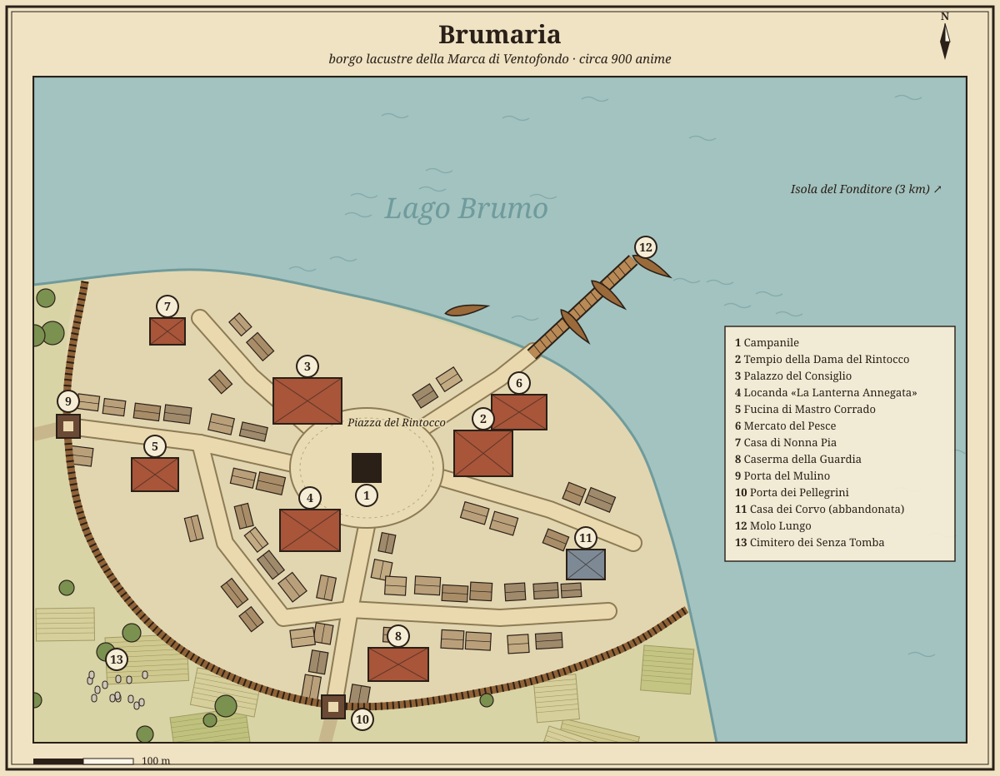
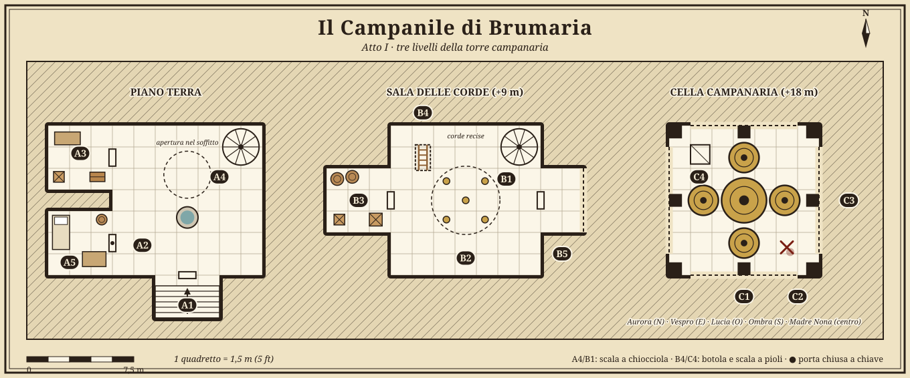
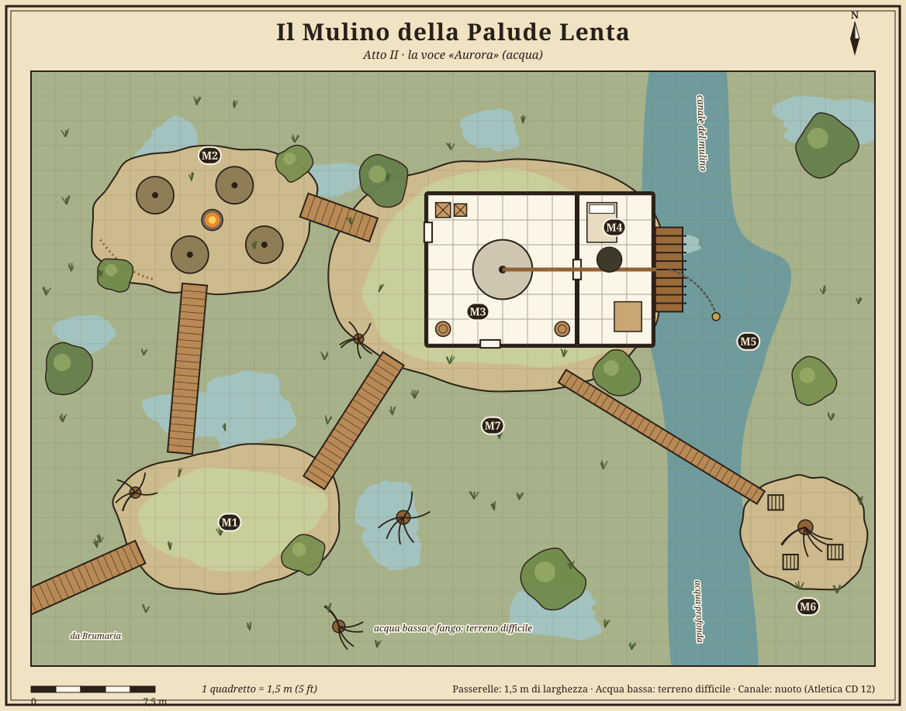
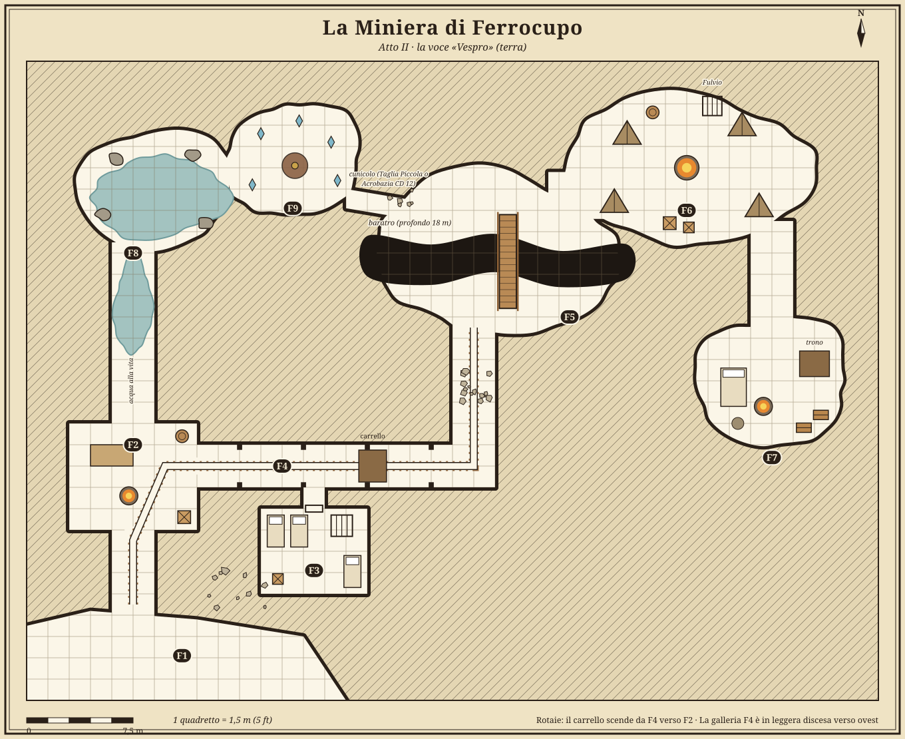
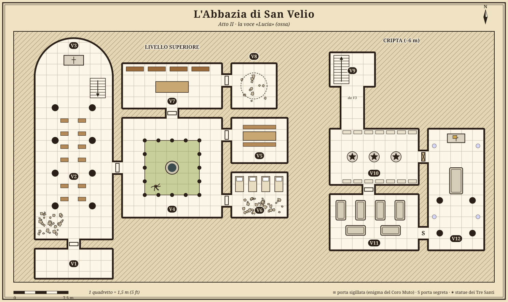
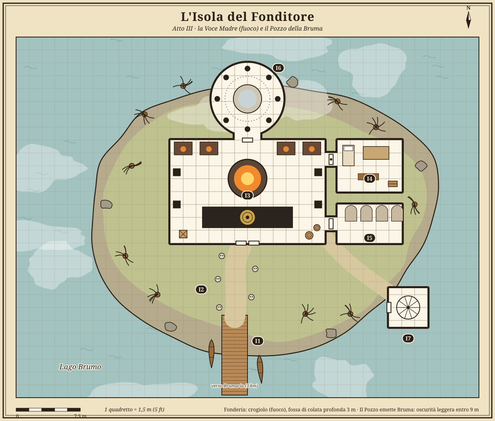

Una campagna breve e completa per Dungeons & Dragons 5ª edizione
Manuale del Master
5 giocatori + 1 facoltativo · personaggi dal 1° al 4° livello
8 sessioni da circa 3 ore · pensata per giocatori e Master alle prime armi
Come stampare. Apri questo file con Firefox o Chrome → Stampa → Salva come PDF (spunta «Stampa sfondi»). Le mappe sono anche nella cartella asset/mappe/brumaria/ del repository: in SVG (si stampano nitide a qualsiasi grandezza) e in PNG dentro png/ (pronte per Roll20, Foundry o Owlbear Rodeo, circa 64 pixel per quadretto).
Benvenuto, Master! Questa avventura è stata scritta pensando a un gruppo che gioca per la prima volta e a un Master che non ha mai condotto. Non devi imparare tutto a memoria: segui il manuale sessione per sessione, leggi i riquadri azzurri ad alta voce e usa i consigli tratteggiati quando hai un dubbio.
Cosa ti serve
Questo manuale, la Guida del Giocatore (una copia da far girare al tavolo) e le Schede dei Personaggi stampate.
Un set di dadi per giocatore (d4, d6, d8, d10, d12, d20). Se mancano, va bene anche un'app.
Le mappe stampate o su schermo. Per i combattimenti bastano un foglio a quadretti e qualche segnalino (monete, pedine, tappi).
Matite, gomme, e un segnalino per la Clessidra della Bruma (vedi capitolo 3).
Come sono organizzati i capitoli
Riquadro azzurro: testo da leggere ad alta voce ai giocatori.
Riquadro beige: informazioni solo per te (segreti, regole, cosa succede).
Riquadro rosso «Scontro»: un combattimento, con i mostri e quanto è difficile.
Riquadro dorato «Con 6 giocatori»: cosa aggiungere se gioca anche il sesto personaggio.
Le tre regole d'oro del Master principiante
Se non sai una regola, decidi tu e vai avanti. Fai tirare un d20: con 10 o più riesce, con meno fallisce. La regola esatta la controlli dopo la partita. Il ritmo conta più della precisione.
Chiedi «Cosa fai?». Descrivi la scena in due o tre frasi, poi passa la parola ai giocatori. Non c'è bisogno di sapere tutto in anticipo: reagisci a quello che fanno.
Dì «sì, ma…» invece di «no». Se un giocatore ha un'idea creativa (spingere un carrello addosso ai goblin, convincere la megera, travestirsi), premiala. Fai tirare un dado e lascia che il mondo reagisca.
I combattimenti di questa avventura sono stati calibrati per essere facili o medi. Se i personaggi sono in difficoltà, i mostri possono fuggire, arrendersi o sbagliare. Se invece il gruppo vince troppo facilmente, aggiungi un nemico dal riquadro «Con 6 giocatori». Nessuno ti controlla i dadi: puoi tirarli dietro uno schermo e «aggiustare» il risultato per il bene della storia. In questa avventura un personaggio non dovrebbe mai morire per sfortuna nella prima sessione.
Struttura della campagna
Sessione
Cosa succede
Livello PG
Mappe
0
Sessione zero: si scelgono i personaggi e si fa una prova delle regole (30 minuti)
1
Valle
1
Atto I: la Festa della Bruma, le campane tacciono, primo scontro, il campanile
1
Brumaria, Campanile
2
Atto I: indagine in paese, l'inseguimento di Fosco, la missione → passaggio al 2° livello
1 → 2
Brumaria
3
Atto II: il Mulino della Palude Lenta (voce «Aurora»)
2
Mulino
4-5
Atto II: la Miniera di Ferrocupo (voce «Vespro») → 3° livello
2 → 3
Miniera
6
Atto II: l'Abbazia di San Velio (voce «Lucia») → 4° livello
3 → 4
Abbazia
7-8
Atto III: la traversata del lago, l'Isola del Fonditore, il finale e l'epilogo
4
Isola
L'ordine dei tre luoghi dell'Atto II è libero, ma quello consigliato è Mulino → Miniera → Abbazia: la difficoltà cresce gradualmente. Se il gruppo sceglie un altro ordine, nessun problema: ogni luogo ha una nota su come renderlo più facile o più difficile.
1. La storia in breve (solo per il Master!)
Il segreto di Brumaria
Brumaria è un borgo di pescatori e artigiani sulla riva del Lago Brumo. Da secoli, nelle notti d'autunno, dal lago sale la Bruma: una nebbia fredda e grigia che non viene dal nostro mondo ma dall'Oltrenebbia, un luogo di anime perdute. Chi resta fuori dalle mura quando la Bruma è piena viene smarrito: il suo nome svanisce dalla memoria di tutti e la sua anima diventa uno Smarrito, un'ombra grigia che vaga nella nebbia.
A tenere lontana la Bruma ci pensano le cinque campane del campanile, fuse duecento anni fa dal fondatore del borgo, Maestro Anselmo Corvo. Ogni notte di Bruma, a mezzanotte, il campanaro suona il Rintocco e la nebbia arretra. Ogni campana ha un batacchio speciale, chiamato «voce», forgiato con un frammento di ferro di stella:
Campana
Posizione
Significato
Dov'è ora la sua voce
Aurora
nord
la campana del mattino
Mulino della Palude Lenta (acqua)
Vespro
est
la campana della sera
Miniera di Ferrocupo (terra)
Lucia
ovest
la campana delle feste
Abbazia di San Velio (ossa)
Ombra
sud
la campana dei morti
ancora al suo posto (vedi «L'indizio dell'Ombra» più avanti)
Madre Nona
centro
la campana maggiore
Isola del Fonditore (fuoco). Si chiama «Voce Madre».
Vent'anni fa
Una sera d'autunno Neve Corvo, bambina di nove anni e figlia della fonditrice Ilvane Corvo, uscì a raccogliere ninfee sulla riva. La Bruma salì prima del solito. Ilvane supplicò il Consiglio di ritardare il Rintocco finché non avessero trovato la figlia. Ma la legge era chiara, e il giovane consigliere Ermanno Valli ordinò al campanaro Tobia di suonare a mezzanotte. La Bruma si ritirò, e Neve con lei.
Ilvane non perdonò mai il borgo. Si ritirò sull'Isola del Fonditore, nella vecchia fonderia di famiglia. Per vent'anni ha sentito in sogno la voce di Neve che la chiamava: «Mamma, fai tacere le campane e potrò tornare a casa.»
La verità
Quella voce non è davvero di Neve. È il Pastore Grigio, lo spirito che nell'Oltrenebbia raduna gli Smarriti come un gregge. Neve esiste ancora, prigioniera nella nebbia: è la sua «agnella» preferita e non è invecchiata di un giorno. Il Pastore ha promesso a Ilvane che, se tutte le voci delle campane verranno distrutte nella notte della Luna Vuota, Neve tornerà. In realtà, senza campane la Bruma inghiottirà Brumaria e tutti i suoi abitanti diventeranno parte del gregge.
Cosa è appena successo (l'inizio dell'avventura)
Ilvane ha radunato i Senzavoce, un piccolo gruppo di abitanti che hanno perso qualcuno nella Bruma e che indossano maschere di cera grigia. Tra loro c'è Fosco, l'apprendista del campanaro. Durante la Festa della Bruma Fosco ha aperto la porta del campanile ai Senzavoce. Tobia li ha sorpresi, c'è stata una colluttazione e il vecchio è morto cadendo contro una campana. Fosco non voleva che accadesse e ne è sconvolto.
I Senzavoce hanno rubato quattro voci su cinque. Per «spegnerle» per sempre, Ilvane deve tenere ognuna in un luogo legato a uno dei quattro elementi fino alla Luna Vuota:
Aurora è affidata all'acqua, nella gora del mulino. La custodisce Comare Gracida, una megera della palude.
Vespro è affidata alla terra, nel fondo della miniera. La custodisce Ugo il Grosso, un bugbear pagato in argento.
Lucia è affidata alle ossa, nella cripta dell'abbazia. La custodisce lo spirito inquieto dell'Abate Ruggero.
La Voce Madre è affidata al fuoco: Ilvane la fonderà nel suo crogiolo.
Finché la Luna Vuota non arriva, le voci possono essere recuperate e funzionano ancora. Ogni voce riportata al campanile indebolisce la Bruma.
L'indizio dell'Ombra. Ilvane ha ordinato di non toccare la campana Ombra, quella che si suona per i morti, perché «Neve non è morta». È un indizio importante per i giocatori: chi ha rubato le voci aveva un motivo personale, e conosceva bene le campane.
Il tema della storia
Non c'è un «cattivo» puro. Ilvane ha sofferto un'ingiustizia vera. Il Podestà ha fatto una scelta terribile ma forse necessaria. I Senzavoce sono persone ferite. L'unico vero nemico è il Pastore Grigio, che si nutre del dolore di tutti. I giocatori possono vincere con le armi, ma il finale migliore arriva con la compassione: dire la verità, ricordare i nomi degli smarriti e riportare a casa Neve.
2. I personaggi del Master (PNG)
Per ogni personaggio trovi un trucco per interpretarlo: una voce, un gesto, una frase tipica. Non serve recitare bene: basta un dettaglio per farlo ricordare.
Nome
Chi è
Cosa vuole
Come interpretarlo
Ermanno Valli
Podestà di Brumaria, sessantenne, barba bianca curata
Salvare il borgo e tenere nascosta la sua colpa
Parla in modo solenne, si aggiusta sempre la catena d'oro della carica. Diventa nervoso se si nomina «Neve».
Madre Orsola
Sacerdotessa della Dama del Rintocco, anziana, quasi cieca
Proteggere il borgo e i suoi fedeli. È l'alleata principale del gruppo.
Voce bassa e calma, tiene le mani di chi le parla. «La nebbia ha paura di chi ricorda.»
Gemma Lanterna
Locandiera della «Lanterna Annegata», robusta e allegra
Che i clienti paghino e che la Festa sia un successo
Ride forte, chiama tutti «tesoro», sa tutti i pettegolezzi.
Capitano Dario Brenna
Capo della guardia, con un occhio solo, onesto ma con pochi uomini
Ordine; non si fida degli stranieri
Frasi brevi, braccia conserte. Si ammorbidisce se qualcuno lo aiuta.
Fosco
Apprendista campanaro, 17 anni, magro, occhi rossi di pianto
Rivedere il fratello Lino, smarrito due anni fa. Ora vuole solo essere perdonato.
Balbetta, guarda per terra, si tormenta le mani.
Nonna Pia
La più vecchia del borgo, cantastorie
Che qualcuno la ascolti
Parla per proverbi e filastrocche. Conosce la leggenda del Pastore Grigio.
Mastro Corrado
Fabbro, gigante buono
Aiutare; si offre di rimontare le voci recuperate
Voce tonante, mani nere di fuliggine, ride di gusto.
Ilvane Corvo
Fonditrice di campane, 50 anni, capelli grigi raccolti, mani bruciate
Riavere sua figlia Neve, a qualsiasi prezzo
Fredda, precisa, parla come un'insegnante. Crolla solo davanti alla verità su Neve.
Neve Corvo
Bambina di 9 anni, pallida, avvolta nella nebbia, scalza
Tornare dalla mamma, ma il Pastore la tiene stretta
Canticchia una ninna nanna. Parla poco: «Ho freddo… dov'è la mamma?»
Il Pastore Grigio
Spirito dell'Oltrenebbia: figura altissima e incappucciata, col bastone da pastore e un volto senza lineamenti
Ingrandire il suo gregge di anime
Parla con le voci dei morti dei personaggi, ripete le parole altrui. È calmo, mellifluo, terrificante.
I segreti dei personaggi giocanti
Ogni scheda ha un «segreto» che lega il personaggio alla storia. I giocatori lo conoscono, gli altri no (a meno che non lo raccontino!). Ecco come farli emergere:
Personaggio
Segreto
Quando farlo pesare
Bruno
Suo padre trattenne Ilvane alla porta la notte in cui Neve si smarrì.
Con Ilvane nel finale: le scuse di Bruno valgono 1 successo per convincerla.
Sorella Alba
Sogna una bambina che canta nella nebbia: è Neve, che chiede aiuto.
Ogni volta che il gruppo riposa, Alba può ricevere un frammento di sogno (un indizio a tua scelta).
Pip
Ha venduto lui la cera per le maschere dei Senzavoce e sa dov'è l'isola.
Al ritrovamento del frammento di maschera (A2). Pip conosce anche un approdo nascosto sull'isola.
Ottavio
È stato apprendista di Ilvane e costruì il carillon di Neve.
All'Abbazia (V12) riconosce il carillon. Con Ilvane: «Maestra, si ricorda di me?» vale 1 successo.
Eryn
Vent'anni fa vide Neve portata via dal Pastore Grigio.
Quando qualcuno nomina il Pastore. La sua testimonianza conferma che Neve non è morta, ma prigioniera.
Leonida (facoltativo)
Era con Neve quella sera e scappò. Conosce la sua ninna nanna.
Nel finale può suonarla per liberare Neve. Neve lo riconosce: «Leo? Sei diventato grande!»
3. Regole speciali della campagna
3.1 La Clessidra della Bruma
La Clessidra è un modo semplice per mostrare ai giocatori che il tempo stringe. Disegna sei caselle su un foglio ben visibile al tavolo:
123456
Alla fine dell'Atto I annerisci 3 caselle.
Annerisci 1 casella quando il gruppo perde molto tempo, per esempio torna indietro a metà di un luogo e riparte dopo giorni, oppure fallisce un obiettivo importante (lascia fuggire Fosco, si fa rubare una voce già recuperata).
Cancella 1 casella ogni volta che una voce viene riportata a Brumaria e suonata.
La Clessidra non fa mai perdere la partita, ma rende più difficile il finale. Ogni casella annerita all'inizio dell'Atto III dà al Pastore Grigio +10 punti ferita. Inoltre:
Caselle annerite
Cosa si vede a Brumaria
0-1
La Bruma resta sul lago. Il borgo festeggia gli eroi.
2-3
Di notte la nebbia lambisce le mura. La gente si chiude in casa e i bambini non escono.
4-5
Di notte la nebbia scivola per le strade e si sentono voci chiamare dei nomi. Durante il riposo in paese, una notte su due tre Smarriti tentano di entrare in una casa.
6
Il borgo è assediato. Nel finale appaiono 2 Smarriti in più.
Il tempo è volutamente «morbido». Non contare i giorni di viaggio con precisione: annerisci una casella solo quando ti sembra giusto dal punto di vista della storia, e dillo ad alta voce: «Mentre riposate, sentite le campane rimaste suonare più deboli… la Bruma avanza». Funziona benissimo per creare tensione.
3.2 Riportare le voci a casa
Quando il gruppo riporta una voce a Brumaria, Mastro Corrado la rimonta e Madre Orsola la benedice. A mezzanotte la campana torna a suonare. Oltre a cancellare una casella della Clessidra, ogni voce dà al gruppo un dono fino alla fine della campagna:
Voce
Dono (per tutto il gruppo)
Aurora
Risveglio. Una volta per riposo lungo, quando un personaggio scende a 0 punti ferita, può invece restare a 1 punto ferita.
Vespro
Cuore saldo. I personaggi hanno vantaggio ai tiri salvezza per non essere spaventati.
Lucia
Luce nei ricordi. Il gruppo scopre il vero nome del Pastore Grigio: Ombrevallo. Nel finale, pronunciarlo con un'azione rende il Pastore stordito fino alla fine del suo prossimo turno (funziona una sola volta).
Inoltre, nel finale, ogni voce recuperata toglie 10 punti ferita al Pastore Grigio, perché le campane del borgo suonano lontane e lo indeboliscono.
3.3 Gli Smarriti e le campanelle
Madre Orsola dà a ogni personaggio una campanella benedetta (vedi Atto I). Con un'azione, un personaggio può suonarla: tutti gli Smarriti entro 9 metri devono superare un tiro salvezza su Saggezza (CD 10), altrimenti nel loro prossimo turno fuggono. Usare le campanelle è un modo semplice, e molto scenografico, per insegnare ai principianti che in D&D si può fare di più che attaccare.
3.4 Giocare in 5 o in 6
L'avventura è scritta per 5 giocatori. Il sesto personaggio, Leonida il bardo, è facoltativo:
Se gioca, in ogni scontro aggiungi quanto indicato nel riquadro Con 6 giocatori.
Leonida ha un legame con la storia: conosce la ninna nanna di Neve. Se Leonida non gioca, la stessa melodia si trova nel carillon d'argento della tomba dell'Abate (Abbazia, V12). La storia funziona benissimo in entrambi i casi.
Se un giocatore manca per una sessione, il suo personaggio «resta indietro» per una buona ragione (aiuta Madre Orsola, fa la guardia alla barca…). Puoi anche farlo muovere a un altro giocatore.
3.5 Salire di livello (milestone)
Niente conti dei punti esperienza: i personaggi salgono di livello in momenti precisi della storia. Ogni scheda personaggio spiega esattamente cosa cambia a ogni livello, e non ci sono scelte complicate da fare.
2° livello: alla fine dell'Atto I.
3° livello: dopo il secondo luogo dell'Atto II.
4° livello: dopo il terzo luogo dell'Atto II, prima della traversata del lago.
3.6 Le CD (Classi Difficoltà) in breve
Molto facile
Facile
Media
Difficile
Molto difficile
5
10
12
15
20
Usa quasi sempre 10 o 12. Riserva il 15 alle cose davvero difficili. Non chiedere tiri per azioni che riuscirebbero comunque (aprire una porta normale, camminare per strada).
4. Sessione zero (circa 1 ora)
Presentazioni (5 min). Spiega che D&D è una storia raccontata insieme: tu descrivi il mondo, i giocatori dicono cosa fanno i loro personaggi, e i dadi decidono quando l'esito è incerto.
Scelta dei personaggi (15 min). Distribuisci le sei schede pronte. Leggi a voce alta solo il «Chi sono» di ognuna e lascia scegliere. Ogni giocatore può cambiare nome, aspetto e genere del proprio personaggio.
I legami (10 min). Ogni scheda ha una domanda «Legame». Fate un giro: ogni giocatore risponde guardando il personaggio alla sua destra. In questo modo il gruppo si conosce già all'inizio.
Le regole di sicurezza (5 min). Chiedete se c'è qualcosa che nessuno vuole vedere al tavolo, per esempio ragni, violenza su bambini o altro. Mettete una carta X al centro del tavolo: chi la tocca, senza dover spiegare, fa saltare la scena in corso. L'avventura parla di lutto e di una bambina perduta, ma senza scene crude.
Prova delle regole (25 min). Fate un mini-scontro con 2 Smarriti su un foglio a quadretti, «per finta», nella palestra della caserma. Mostra come si tira l'iniziativa, si attacca e si lancia un incantesimo. Poi fai fare a tutti una prova di abilità (per esempio «Chi riesce a sollevare la botte?»).
Durante la prova rispondi a una domanda alla volta e lascia la Guida del Giocatore al centro del tavolo. Va benissimo se alla prima partita ci si confonde: entro la terza sessione tutti avranno imparato.
5. Atto I · La notte senza rintocchi
Livello dei personaggi: 1 · Durata: 2 sessioni · Mappe: Brumaria, Campanile
Perché i personaggi sono a Brumaria
Ogni scheda personaggio ha già un motivo pronto. In sintesi:
Bruno è una guardia del borgo e oggi è di turno alla Festa.
Sorella Alba serve nel tempio della Dama del Rintocco.
Pip è venuto a vendere merce di contrabbando durante la Festa.
Ottavio studia la storia delle campane e voleva intervistare Tobia.
Eryn fa la guida nella palude e ha appena accompagnato in paese dei mercanti.
Leonida, se gioca, è il menestrello ingaggiato per la Festa.
Scena 1 · La Festa della Bruma
È l'ultima sera d'ottobre e Brumaria è in festa. La Piazza del Rintocco è illuminata da centinaia di lanterne di carta. Si sentono l'odore di castagne arrosto e di pesce fritto, e i bambini corrono con le maschere da Smarrito fatte di stracci grigi. Sopra la piazza si alza il campanile di pietra scura. Ai piedi della torre, Madre Orsola benedice chi passa. Dal lago, lentamente, sale una nebbia sottile e argentata. È la Bruma. Tutti la guardano e sorridono: tra poco, a mezzanotte, le campane la ricacceranno indietro, come ogni anno.
Lascia che i giocatori si muovano liberamente per la Festa e presentino i loro personaggi. Ecco alcune attività (fai tirare un d20, e con 10 o più vincono):
La gara del palo unto (Atletica): in cima c'è un prosciutto.
Il lancio dei cerchi (Destrezza): il premio è una lanterna di carta.
La gara di racconti di Nonna Pia (Intrattenere o Carisma): Nonna Pia racconta la leggenda del Pastore Grigio. Leggi il riquadro qui sotto.
Il banco di Gemma: vino caldo e chiacchiere. Gemma dice che «da qualche settimana l'apprendista Fosco è strano: piange da solo e parla di suo fratello».
Nonna Pia stringe lo scialle e abbassa la voce: «Nella nebbia c'è un pastore, alto come un pioppo, col bastone e senza faccia. Raduna chi si perde e se lo porta via. Lo chiamano il Pastore Grigio, ma il suo vero nome nessuno lo ricorda più. E sapete perché? Perché chi lo dimentica non può chiamarlo, e chi non può chiamarlo non può nemmeno cacciarlo via!»
Scena 2 · Mezzanotte
La folla tace e tutti alzano gli occhi al campanile. Il primo rintocco… non arriva. Passa un minuto, poi un altro. Qualcuno ride nervoso. Poi le lanterne di carta cominciano a spegnersi una dopo l'altra, come soffiate da un respiro gelido. La nebbia, che fino a un attimo fa stava sul lago, scavalca il molo e invade la piazza. Nel grigio si muovono delle sagome, e non sono bambini in maschera.
Facile⚔ Scontro 1 · Gli Smarriti in piazza Nemici: 4 Smarriti (vedi Bestiario). Mappa: non serve. Disegna la piazza come un cerchio, con il campanile al centro e qualche bancarella. Tattica: gli Smarriti si dirigono verso i cittadini più vicini, uno per ogni personaggio. Lasciano perdere chi suona una campana o chi tiene una torcia. Aiuto: Madre Orsola grida «Le campanelle! Suonate le campanelle!» e lancia ai personaggi le campanelle benedette dal tempio (vedi 3.3). Fine: quando restano 1 o 2 Smarriti, la nebbia si ritira da sola.
aggiungi 1 Smarrito.
Questo è il primo combattimento: vai piano. Spiega l'iniziativa, chiedi a ogni giocatore cosa fa nel suo turno e descrivi colpi e mancati in modo vivace («la tua spada attraversa il fumo grigio e la creatura urla senza voce!»). Uno Smarrito sconfitto si dissolve lasciando sul selciato un piccolo oggetto: un bottone, un fermaglio, un giocattolo. Qualcuno tra la folla riconosce l'oggetto di una persona cara scomparsa.
Scena 3 · Il campanile
Dopo lo scontro, Madre Orsola o il Capitano Brenna chiedono ai personaggi di salire sulla torre: «Tobia non risponde! Qualcuno deve suonare quelle campane!» La porta del campanile è aperta e la serratura non è forzata. Usa la mappa 03 · Il Campanile.
A1 · Il portone
È aperto, con la chiave ancora nella serratura dall'interno: chi è entrato aveva una chiave. Sui gradini ci sono impronte di argilla grigia e umida. Con Natura CD 10 si capisce che è argilla da fonderia, quella che si trova solo sull'isola del lago.
A2 · L'atrio
Al centro c'è una fonte d'acqua benedetta. Dal soffitto pendono corde tagliate di netto. Per terra, con Percezione CD 10, si trova un frammento di maschera di cera grigia (è dei Senzavoce).
A3 · La sacrestia
Contiene paramenti, candele e un forziere aperto e vuoto: era quello delle chiavi. Con Indagare CD 12 si nota che è stato aperto con la chiave e non scassinato.
A4 · La scala a chiocciola
Sale fino alla sala delle corde, a 9 metri d'altezza.
A5 · L'alloggio di Tobia
La porta è chiusa a chiave (si apre con gli attrezzi da scasso e Destrezza CD 10, o con una spallata e Atletica CD 12). Dentro ci sono un letto e un tavolo con il diario di Tobia (Documento 1, capitolo 12). L'ultima pagina parla della «vecchia fonditrice», di «quella notte di vent'anni fa» e di «Fosco che fa domande strane sulle campane».
B1-B2 · La sala delle corde
Le cinque corde delle campane sono state recise. Dietro le botti del ripostiglio (B3) si nascondono due Senzavoce, rimasti indietro per bruciare il diario di Tobia. Credono che sia in questa stanza e non sanno che è giù in A5.
B4 · Botola e scala a pioli
Portano alla cella campanaria.
B5 · Il balcone
Ha una ringhiera bassa e affaccia sulla piazza. Un Senzavoce che scappa può tentare di calarsi da qui con una corda.
C1 · La cella campanaria
Le cinque campane sono al loro posto, ma quattro sono senza batacchio: le hanno svuotate. Solo Ombra, la campana dei morti, ha ancora la sua voce.
C2 · Il corpo di Tobia
Il vecchio giace accanto alla campana Ombra, con una ferita alla testa. Con Medicina CD 10 si capisce che è caduto e ha battuto la testa: è stato un incidente durante una lotta, non un omicidio. Stringe nel pugno un bottone d'ottone con il simbolo di una campanella: è il bottone della giacca da apprendista di Fosco.
C3 · Le arcate
Sono aperte sul vuoto, a 18 metri dal suolo. Da qui si vede la Bruma ritirarsi verso il lago e, lontano, un bagliore rosso sull'isola, come di una fornace accesa.
C4 · La botola
Collega la cella alla sala delle corde.
Facile⚔ Scontro 2 · I Senzavoce nel campanile Nemici: 2 Senzavoce (vedi Bestiario). Dove: sala delle corde (B2-B3). Tattica: se vengono scoperti, uno attacca mentre l'altro cerca di fuggire dal balcone (B5). Se perdono metà dei punti ferita si arrendono subito: non sono assassini, sono persone disperate. Interrogatorio: un Senzavoce catturato si chiama Marta la cestaia, e sua madre è stata smarrita tre inverni fa. Con Persuasione CD 10 o Intimidire CD 12 confessa: «La Maestra ci ha promesso che i nostri cari torneranno… Fosco ci ha aperto la porta. Tobia non doveva morire!» Non sa dove siano le voci, solo che «la Maestra le ha date a dei custodi». Dice anche che Fosco è scappato «verso la vecchia casa dei Corvo».
aggiungi 1 Senzavoce.
Suonare la campana Ombra. Se un personaggio suona l'unica campana rimasta, la Bruma rallenta, ma non basta. Madre Orsola sale e spiega: «Ombra è la campana dei morti. Da sola tiene lontana la nebbia solo per poche notti. Ci servono le altre voci.»
Scena 4 · Il Consiglio (mattina dopo)
Il Podestà Ermanno Valli convoca i personaggi nel Palazzo del Consiglio (mappa di Brumaria, n. 3). Ci sono anche Madre Orsola e il Capitano Brenna.
Il Palazzo del Consiglio odora di cera e di legno vecchio. Il Podestà Valli, pallido, si aggiusta la catena d'oro sul petto. «Avete visto con i vostri occhi cosa è successo. Senza le voci delle campane, la Bruma tornerà ogni notte, sempre più forte. La guardia è troppo piccola per cercare dappertutto. Vi offro cento monete d'oro per ogni voce che riporterete a questo campanile. E la gratitudine eterna di Brumaria.»
Ricompensa: 100 mo per ogni voce, pagate al ritorno. Con Persuasione CD 12 il Podestà offre in anticipo 50 mo e 2 pozioni di guarigione.
Se qualcuno nomina Ilvane Corvo o Neve, il Podestà impallidisce. Con Intuizione CD 12 si capisce che nasconde qualcosa. Ammetterà la verità solo più avanti, oppure se messo alle strette (Persuasione o Intimidire CD 15): «Fui io a ordinare il Rintocco quella notte. Neve era là fuori. Ho salvato il borgo… e ho condannato una bambina.»
Madre Orsola regala al gruppo le campanelle benedette (se non le hanno già), 2 fiaschette di acqua santa e una mappa della valle (dai ai giocatori la mappa 01 · La Valle di Brumaria). Spiega anche dove sono state portate le voci: «Ho pregato tutta la notte. La Dama mi ha mostrato tre luoghi: acqua ferma che gira, ferro sotto la montagna, ossa sotto la pietra santa.» Sono il Mulino, la Miniera e l'Abbazia.
Se i giocatori non capiscono le visioni di Madre Orsola, aiutali senza problemi. Eryn conosce il mulino della palude, Ottavio sa della miniera abbandonata e Sorella Alba conosce l'abbazia. Oppure è Nonna Pia a risolvere l'enigma. Non bloccare mai la storia su un indovinello.
Scena 5 · La casa dei Corvo e Fosco
La casa abbandonata dei Corvo (mappa di Brumaria, n. 11) è in riva al lago, con le finestre sbarrate e l'edera sui muri. Dentro ci sono mobili coperti da lenzuola, una stanzetta da bambina rimasta intatta da vent'anni e un piccolo laboratorio con stampi da campana.
Nella stanzetta ci sono un lettino con una coperta ricamata a fiocchi di neve, una bambola di pezza e dei disegni appesi al muro: una donna e una bambina che si tengono per mano davanti a un campanile. Seduto sul pavimento, un ragazzo magro singhiozza con la faccia tra le mani. Sulla sua giacca da apprendista manca un bottone.
Fosco non combatte. Se i personaggi sono gentili racconta tutto quello che sa (con Persuasione CD 10, o senza tiro se gli parlano con compassione):
La «Maestra» è Ilvane Corvo, che vive sull'Isola del Fonditore.
Ilvane sente la voce di sua figlia Neve nei sogni. Ha promesso che, quando le campane taceranno per sempre, tutti gli smarriti torneranno, anche Lino, il fratello di Fosco.
Le voci devono essere «spente» nei quattro elementi entro la notte della Luna Vuota. La Voce Madre se l'è portata Ilvane sull'isola.
Per arrivare all'isola servono una barca e un modo per attraversare la Bruma: «La Maestra ci dava delle maschere di cera. Con quelle la nebbia non ti vede.» Fosco ne ha una e può regalarla al gruppo (vedi Tesori).
Se i personaggi sono minacciosi o violenti, Fosco scappa dalla finestra verso il lago. Annerisci 1 casella della Clessidra: Fosco corre ad avvertire Ilvane, che si prepara meglio. Il gruppo potrà comunque ritrovarlo più avanti, sull'isola.
Cosa fare di Fosco. Il Capitano Brenna vorrebbe arrestarlo. Madre Orsola chiede pietà: «È un ragazzo che ha perso suo fratello.» Lascia decidere ai giocatori. Se lo perdonano, Fosco diventa un alleato prezioso e nell'Atto III può guidare la barca.
Fine dell'Atto I
Quella notte la campana Ombra suona da sola, con un rintocco lento e triste. La Bruma si ferma alle porte di Brumaria, ma non torna sul lago. Resta lì, ad aspettare. Domani si parte.
✅ I personaggi salgono al 2° livello. Annerisci 3 caselle della Clessidra della Bruma.
Viaggiare nella valle
Usa la mappa 01 · La Valle di Brumaria. Non serve contare il cibo o le ore: basta descrivere il viaggio in un paio di frasi. Durante ogni viaggio, tira 1d6. Con 1-2 c'è un incontro: tira sulla tabella del capitolo 11, oppure scegline uno adatto.
Mulino della Palude Lenta: 1 giorno a piedi verso sud-ovest. Eryn conosce la strada.
Miniera di Ferrocupo: 2 giorni a piedi verso nord, oppure 1 giorno in chiatta risalendo il fiume Lenta (il barcaiolo Gaspare chiede 5 mo).
Abbazia di San Velio: 1 giorno a piedi verso est, lungo la riva e poi nel bosco.
6. Atto II · Le tre voci
I tre luoghi possono essere visitati in qualsiasi ordine. Dopo ognuno, il gruppo torna di solito a Brumaria a riportare la voce: è un buon momento per riposare, comprare equipaggiamento e parlare con i PNG.
Ritorni a Brumaria. A ogni ritorno, scegli una piccola scena:
il Podestà paga la ricompensa, ma evita lo sguardo dei personaggi;
Nonna Pia racconta un pezzo della storia di Neve («Era la bambina più allegra del borgo. Cantava sempre una ninna nanna inventata da sua madre…»);
un cittadino ringrazia i personaggi perché il suono di una campana gli ha fatto tornare in mente il nome di una persona smarrita;
Mastro Corrado rimonta la voce e invita tutti a sentire il rintocco di mezzanotte.
Cosa si compra a Brumaria. Pozione di guarigione: 50 mo (Madre Orsola ne ha 4). Fiaschetta d'acqua santa: 25 mo. Frecce (20): 1 mo. Torce, corde, lanterne: prezzi della Guida del Giocatore. Mastro Corrado ripara gratis armi e armature corrose.
6a. Il Mulino della Palude Lenta (voce «Aurora» · acqua)
Livello consigliato: 2 · Mappa: 04 · Il Mulino · Durata: 1 sessione
In breve. Il vecchio mulino ad acqua nella palude è abbandonato da anni. Ora ci vive Comare Gracida, una megera che si fa venerare da una tribù di uomini-rana. Ilvane le ha affidato la voce Aurora: è incatenata sotto la ruota del mulino, immersa nell'acqua che gira senza sosta. Gracida non è interessata alla Bruma. Vuole solo cose rare per la sua collezione, quindi si può trattare con lei.
La strada diventa sentiero, il sentiero diventa fango, e il fango diventa una passerella di assi marce sospesa sopra un'acqua scura e immobile. Le canne sono più alte di voi e frusciano anche senza vento. In lontananza si sente un cigolio lento e regolare: una grande ruota di legno che gira, gira, gira. Tra la nebbia bassa compare il profilo storto di un mulino.
Regole del luogo
Acqua bassa e fango (tutto il verde scuro della mappa): terreno difficile, cioè ogni metro costa il doppio.
Canale del mulino (blu scuro): è profondo e bisogna nuotare. Si attraversa con una prova di Atletica CD 10; chi fallisce viene trascinato 3 metri a valle.
Eryn ha il vantaggio Esploratore nato (palude): guida il gruppo senza perdersi e non può essere sorpresa qui.
M1 · L'isola dei giunchi
La prima isola dopo la passerella. Tre uomini-rana sono nascosti nell'acqua bassa, mimetizzati tra le canne.
Facile⚔ Scontro · Agguato degli uomini-rana Nemici: 3 Uomini-rana. Sorpresa: chi ha Percezione passiva 12 o più li nota prima che attacchino. Tattica: saltano fuori dall'acqua, colpiscono con le lance e cercano di spingere un personaggio in acqua (prova contrapposta di Atletica). Se due di loro vengono sconfitti, il terzo fugge verso il villaggio (M2) gracidando l'allarme. Parlare: gli uomini-rana parlano un italiano stentato. Se catturati, rivelano che «la Grande Madre» vive nella «casa che gira» e che ha «un dono luccicante sotto la ruota».
aggiungi 1 Uomo-rana.
M2 · Il villaggio degli uomini-rana
Quattro capanne di fango attorno a un fuoco fumoso. Ci vivono Re Gluglù (un uomo-rana grasso con una corona di ami da pesca) e la sua tribù: 4 guerrieri, più femmine e girini che non combattono. Gli uomini-rana sono vanitosi e pavidi. Se vengono chiamati «Maestà» e ricevono un dono luccicante (un oggetto da almeno 5 mo, o una prova di Persuasione CD 10), il Re racconta tutto su Gracida e offre una guida fino al mulino. Se vengono attaccati, fuggono in acqua: non c'è bisogno di combattere qui.
M7 · La piana di fango
Una distesa fangosa davanti al mulino. Nel fango è sepolta una rana gigante, l'animale da guardia di Gracida. Attacca chi passa nel mezzo. Si può evitare camminando sulle passerelle.
Facile⚔ Scontro · La rana gigante Nemici: 1 Rana gigante. Afferra con la lingua e cerca di trascinare la preda in acqua. Fugge se perde metà dei punti ferita.
aggiungi una seconda Rana gigante.
M3 · La sala della macina
Una grande macina di pietra gira lentamente, mossa dall'albero di trasmissione della ruota esterna. Ci sono sacchi di farina ammuffita, botti e casse. Vicino alla macina c'è una leva del freno, arrugginita: per tirarla serve Atletica CD 12, o due personaggi insieme senza tiro. Il freno ferma la ruota (vedi M5).
M4 · La tana di Comare Gracida
Ci sono un letto fatto di reti da pesca, un calderone che borbotta e scaffali pieni di barattoli: occhi di rana, capelli intrecciati, conchiglie… e ricordi in bottiglia, piccole luci che sussurrano. Gracida accoglie il gruppo con la sua illusione: una vecchina gentile con il grembiule infarinato, che offre biscotti (fatti di fango).
«Oh, che bei giovanotti! Visite, visite! Nessuno viene mai a trovare la povera Gracida. Volete un biscotto, tesorini? Sedetevi, sedetevi…» La vecchina sorride, ma i suoi occhi sono gialli come quelli di un rospo, e per un istante la sua ombra sul muro ha le dita troppo lunghe.
Cosa sa e cosa vuole Gracida. Ammette senza problemi di custodire la voce: «Una signora triste me l'ha portata. Mi ha pagata con una cosa preziosa… un ricordo felice di sua figlia». Mostra una bottiglia con una lucina dorata: è il ricordo di Ilvane (vedi più sotto). Gracida è disposta a cedere la voce in cambio di qualcosa di altrettanto prezioso. Lascia scegliere ai giocatori:
Un ricordo: un personaggio le racconta un suo ricordo felice e lo dimentica fino alla fine della campagna. È una bella occasione di gioco di ruolo, e il ricordo tornerà nell'epilogo.
Una voce: un personaggio le cede la sua voce fino all'alba successiva. Resta muto: niente incantesimi con componente verbale e niente conversazioni.
Una storia triste raccontata bene: prova di Intrattenere o Persuasione CD 12. Gracida colleziona dolori e piange lacrime di fango.
Un inganno: prova di Inganno CD 14 (per esempio, spacciare un oggetto qualsiasi per un tesoro magico). Se fallisce, Gracida si offende e attacca.
Se l'accordo va in porto, Gracida tira fuori la catena e la voce dalla gora (M5) senza combattere. È anche disposta a vendere il ricordo di Ilvane per 50 mo, o in cambio di un altro favore. Questo ricordo è utilissimo nel finale (vedi Atto III).
Media⚔ Scontro · Comare Gracida Nemici: Comare Gracida (vedi Bestiario). Se lo scontro avviene vicino al villaggio, si aggiungono 2 Uomini-rana. Tattica: lascia cadere l'illusione e si mostra com'è davvero: pelle verde, capelli di alghe, artigli neri. Combatte imitando le voci dei personaggi per confonderli. Quando ha 15 punti ferita o meno si tuffa nel canale e sparisce. Lascia dietro di sé la tana e il suo tesoro, ma non la voce, che resta incatenata sotto la ruota (M5).
aggiungi 1 Uomo-rana.
M5 · La gora e la ruota
La voce Aurora, un batacchio di bronzo e ferro lungo come un braccio, è incatenata sott'acqua sotto la ruota del mulino. Si vede brillare debolmente nell'acqua scura. Per recuperarla:
Fermare la ruota: con il freno in M3, oppure infilando una trave tra le pale (Atletica CD 12).
Tuffarsi: se la ruota è ferma basta una prova di Atletica CD 10. Se la ruota gira, chi fallisce la prova viene colpito dalle pale (1d6 danni contundenti) e deve riprovare.
Spezzare la catena: CA 15, 10 punti ferita. Oppure si apre il lucchetto con gli attrezzi da scasso (Destrezza CD 12).
M6 · L'isolotto delle offerte
Un albero morto da cui pendono gabbie di vimini. In una c'è un prigioniero, Beppe il pescatore, che Gracida voleva «tenere per l'inverno». È vivo, affamato e terrorizzato. Si raggiunge camminando sul tronco caduto (Acrobazia CD 10; chi fallisce cade nel canale). Se viene liberato, Beppe promette ai personaggi la sua barca per arrivare all'isola nell'Atto III.
Tesoro del Mulino. Nella tana di Gracida ci sono 60 mo in monete antiche, 2 pozioni di guarigione e un Mantello elfico (perfetto per Pip o Eryn) piegato in un baule. Tra i barattoli c'è un Amuleto della rana (vedi Tesori). Nella gabbia di Beppe c'è anche una lettera di Ilvane (Documento 5) che Gracida usava come foglio per avvolgere le ossa.
Se affrontato per ultimo (al 3° livello): Gracida ha 60 punti ferita e in M1 ci sono 4 uomini-rana.
6b. La Miniera di Ferrocupo (voce «Vespro» · terra)
Livello consigliato: 2 (si sale al 3° alla fine, se è il secondo luogo) · Mappa: 05 · La Miniera · Durata: 1-2 sessioni
In breve. La miniera di ferro, chiusa da trent'anni, è occupata dal clan goblin dei Mordiferro, guidato dal bugbear Ugo il Grosso. Ilvane ha pagato Ugo in argento perché custodisse la voce Vespro nella vena più profonda. Ma laggiù vive un divoraferro, un mostro che mangia il metallo, e i goblin hanno troppa paura per tornarci. I goblin sono stanchi di Ugo e affamati: sono facili da corrompere. Nella miniera è prigioniero Fulvio, uno gnomo cercatore che conosce i passaggi segreti.
Il sentiero di montagna termina davanti a una bocca nera nella roccia, sostenuta da travi annerite. Sopra l'ingresso, una vecchia insegna di ferro dice «FERROCUPO» … ma qualcuno ha cancellato metà delle lettere e ha scritto sotto, con il carbone, «MORDIFERRO — VIA!». Dall'interno arrivano odore di fumo e il ticchettio di dadi su un sasso.
F1 · Il pendio e l'ingresso
Due goblin di guardia giocano a dadi appena dentro la galleria e non stanno attenti: si possono sorprendere con Furtività CD 10 (prova di gruppo: se riesce almeno metà del gruppo, va tutto bene). Si possono anche corrompere: 5 mo o del cibo, e i goblin «non hanno visto niente».
Facile⚔ Scontro · Le sentinelle Nemici: 2 Goblin. Se uno dei due fugge, corre in F2 a dare l'allarme.
F2 · Il posto di guardia
C'è un tavolo con resti di cena, un fuoco e un gong fatto con una pentola. Due goblin sonnecchiano qui. Se suonano il gong, i goblin di F6 sono pronti quando il gruppo arriva (niente sorpresa possibile), ma non accorrono. A nord parte la galleria verso F8 (acqua alla vita), a est la galleria dei carrelli.
Facile⚔ Scontro · Il posto di guardia Nemici: 2 Goblin. Combattono solo se non possono scappare.
aggiungi 1 Goblin qui e 1 in F1.
F3 · Il dormitorio dei minatori
È chiuso da una porta. Dentro ci sono vecchie brande e una gabbia vuota. Due lupi legati a catene lunghe 3 metri fanno la guardia ai sacchi di provviste dei goblin. Se ricevono cibo (anche una razione), con Addestrare Animali CD 10 si calmano. Altrimenti attaccano chi si avvicina, ma non possono uscire dalla stanza.
Facile⚔ Scontro · I lupi (evitabile) Nemici: 2 Lupi, trattenuti dalle catene.
Sotto una branda c'è un sacchetto con 30 mo in argento: è la paga di Ugo, che lui nasconde ai goblin.
F4 · La galleria dei carrelli
Una galleria in salita, con rotaie e un vecchio carrello. È una trappola: quando sentono arrivare qualcuno, i goblin di F5 spingono un secondo carrello pieno di pietre lungo la discesa.
Trappola · Il carrello impazzito. Il rumore è ben udibile (con Percezione CD 10 si sente qualche secondo prima). Chi è sulle rotaie fa un tiro salvezza su Destrezza CD 12: se fallisce subisce 2d6 danni contundenti, se riesce metà. Il carrello si schianta contro il primo carrello fermo. Idea per i giocatori: si può usare il carrello fermo come scudo, oppure spingerlo in salita contro i goblin.
F5 · Il baratro
Una grotta tagliata in due da un crepaccio profondo 18 metri. Lo attraversa un ponte di corde che oscilla: chi lo attraversa camminando non ha problemi, chi corre o combatte sul ponte deve fare una prova di Acrobazia CD 10. Sull'altro lato, dietro una roccia, ci sono 2 goblin arcieri. Il cunicolo stretto a ovest porta in F9: ci passano solo creature piccole (Pip, Ottavio) o chi supera Acrobazia CD 12.
Facile⚔ Scontro · Arcieri sul baratro Nemici: 2 Goblin con l'arco, in copertura (+2 CA). Minacciano di tagliare il ponte, ma non lo fanno: è l'unica via d'uscita anche per loro. Se uno cade, l'altro si arrende.
F6 · L'accampamento
Una grande caverna con quattro tende, un falò e casse di provviste. Ci sono 4 goblin affamati che si lamentano di Ugo («Lui mangia tutto! Noi solo ossa!»). In una gabbia appesa c'è Fulvio, uno gnomo cercatore di gemme catturato una settimana fa.
Trattare: con del cibo, del denaro (10 mo) o una prova di Persuasione CD 12, i goblin lasciano passare il gruppo e magari si uniscono alla «rivolta» contro Ugo. Possono anche consegnare Fulvio.
Fulvio è chiacchierone e riconoscente. Se viene liberato, spiega che la voce è nella vena profonda (F9) e che «la bestia mangiaferro ci dorme sopra come una gallina sulle uova». Conosce la strada dalla galleria allagata (F8) e il trucco per distrarre il mostro: «Gli butti un po' di ferro e quello impazzisce!»
Media⚔ Scontro · L'accampamento Nemici: 4 Goblin. Quando due di loro cadono, gli altri si arrendono e implorano pietà.
aggiungi 1 Goblin.
F7 · La tana di Ugo il Grosso
Una caverna con un «trono» fatto di un carrello rovesciato, un giaciglio di pelli e due bauli. Ugo il Grosso è un bugbear enorme e pigro, ha con sé il suo lupo «Briciola» e rosicchia un osso di montone.
Una montagna di pelo rossiccio si alza dal trono di legno. Due occhi gialli vi squadrano dall'alto in basso. «Ospiti! Ugo non ha ordinato ospiti.» Si gratta la pancia con la mazza ferrata. «Siete venuti per il batacchio, eh? La donna grigia ha pagato Ugo. Ugo è un bugbear d'onore… più o meno.»
Ugo è avido e ama le sfide. Ci sono tre modi pacifici per ottenere la voce:
Pagarlo di più: Ilvane gli ha dato 50 mo d'argento, e lui ne vuole 60. Con Persuasione CD 12 si accontenta di 40.
Una sfida a braccio di ferro: prova contrapposta di Atletica contro Ugo (+4). Al meglio di tre. Ugo rispetta il risultato.
Dirgli la verità: la voce è nella vena profonda, con il divoraferro. Anche Ugo ha paura di andarci, e se il gruppo lo «libera» dal mostro lascia loro il batacchio volentieri. «Basta che non lo dite alla donna grigia.»
Media⚔ Scontro · Ugo il Grosso Nemici: Ugo il Grosso e 1 Lupo (Briciola). Tattica: Ugo attacca il personaggio più grosso, «per rispetto». Quando scende sotto 10 punti ferita si arrende e offre il suo tesoro.
aggiungi 1 Goblin (la guardia del corpo di Ugo).
Tesoro: nei bauli ci sono 120 mo in monete d'argento, 2 pozioni di guarigione e una Spada lunga +1 chiamata «Rintocco», trovata da Ugo in miniera (perfetta per Bruno).
F8 · La galleria allagata
L'acqua arriva alla vita: è terreno difficile, e le creature piccole devono nuotare. È tutto buio, servono luce o scurovisione. Sulle pareti ci sono vecchi segni dei minatori: una freccia e la scritta «VENA → FESSURA». Una fessura stretta ma percorribile porta in F9.
F9 · La vena profonda
Una caverna scintillante di cristalli azzurri. Al centro, su un nido di ferro rosicchiato, dorme il divoraferro: un insetto grande come un cane, con la coda a pala e lunghe antenne piumate. Sotto di lui c'è la voce Vespro, che il mostro lecca come una caramella.
Facile⚔ Scontro · Il divoraferro Nemici: 1 Divoraferro. Soluzione furba: se qualcuno lancia oggetti di ferro (chiodi, pentole, armi vecchie dei goblin) lontano dal nido, il divoraferro li insegue e li mangia, e per 3 turni ignora tutto il resto. È il momento giusto per prendere la voce. Attenzione: le sue antenne corrodono il metallo. Rassicura i giocatori: Mastro Corrado ripara tutto gratis a Brumaria.
il divoraferro ha 36 punti ferita.
Se affrontato per ultimo (al 3° livello): Ugo ha 45 punti ferita e in F6 ci sono 5 goblin.
In breve. L'abbazia, abbandonata da un secolo, fu la casa dei monaci che scrissero la Legge del Rintocco: «A mezzanotte si suona, senza indugio e senza pietà.» Il suo autore, l'Abate Ruggero, non ha mai trovato pace per i tanti smarriti che la sua legge ha causato. Ilvane ha risvegliato il suo spirito e gli ha affidato la voce Lucia, convincendolo che «tacere le campane è l'unico modo per espiare». Nella cripta c'è anche il carillon d'argento di Neve, che Ilvane ha lasciato lì perché non riusciva più ad ascoltarlo.
Sulla collina, tra querce nere, si alza ciò che resta dell'Abbazia di San Velio: un campanile spezzato a metà, un tetto sfondato, mura coperte d'edera. Centinaia di corvi stanno appollaiati sui cornicioni, in silenzio. Nessuno gracchia. Quando mettete piede sul sagrato, si alzano in volo tutti insieme, senza un suono, e la porta della chiesa si apre da sola, cigolando.
V1 · Il sagrato
Su una lapide rotta si legge: «Qui riposa chi ha custodito il sonno dei giusti.» È un indizio per l'enigma.
V2 · La navata
File di panche marce e colonne. La luce entra dal tetto sfondato. Quando qualcuno raggiunge il centro della navata, quattro scheletri di monaci si alzano dalle panche.
Facile⚔ Scontro · I monaci scheletro Nemici: 4 Scheletri. Sono vulnerabili ai danni contundenti (mazze, martelli, bastoni). Aiuto: Sorella Alba può usare Incanalare Divinità: Scacciare Non Morti, ed è il momento perfetto per mostrarlo.
aggiungi 1 Scheletro.
V3 · Il presbiterio e la scala
Un altare di pietra con il simbolo della Dama del Rintocco. Chi prega qui per un minuto (Religione CD 10, oppure Sorella Alba senza tiro) riceve una benedizione: tutti i presenti ottengono 1d8 punti ferita temporanei, una sola volta. Dietro l'altare una scala scende alla cripta (V9).
V4 · Il chiostro
Un giardino incolto con un pozzo al centro. Accanto al pozzo appare il fantasma gentile di Fra' Tommaso, un giovane novizio. È innocuo e si sente solo.
Una figura trasparente, con la tonaca e la tonsura, sta seduta sul bordo del pozzo a dondolare le gambe. «Oh! Siete vivi? Che bello! Qui sono tutti morti da tanto, e quelli sotto sono così noiosi…» Poi si fa serio. «Siete qui per il batacchio d'oro, vero? L'Abate lo tiene stretto stretto. Poverino. Non ha mai smesso di sentirsi in colpa.»
Fra' Tommaso racconta la storia dell'Abate Ruggero e della Legge. Dice che per aprire la tomba bisogna «far cantare i Tre Santi nell'ordine dell'inno», e che l'inno si trova in biblioteca (V7). Aggiunge che «se l'Abate sente l'inno, si ricorda di quando era buono».
V5 · Il refettorio
Tavoli lunghi e ciotole di legno. Due monaci zombi sono ancora seduti a «mangiare» polvere. Si alzano solo se vengono disturbati, e sono lenti.
Facile⚔ Scontro · Gli zombi a tavola (evitabile) Nemici: 2 Zombi.
V6 · Il dormitorio
Brande e un crollo di macerie. Tra le travi vive uno sciame di pipistrelli che si alza se si fa luce o rumore. Sotto le macerie (Indagare CD 12, oppure un'ora di scavo) c'è il forziere del priore: dentro una Bacchetta dei dardi incantati e 40 mo.
Facile⚔ Scontro · I pipistrelli Nemici: 1 Sciame di pipistrelli. Fugge se viene colpito con il fuoco.
V7 · La biblioteca (sala capitolare)
Scaffali crollati, pergamene ammuffite. Su un leggio, sotto una teca di vetro rotta, c'è un libro aperto con l'Inno dei Tre Santi (Documento 2): è la soluzione dell'enigma. Con Storia CD 12 si trova anche il registro dell'abbazia, che racconta come l'Abate Ruggero scrisse la Legge del Rintocco dopo una notte in cui la Bruma uccise metà del borgo. Il registro riporta anche il suo pentimento: «Dio mi perdoni, ho scritto una legge senza pietà».
V8 · Il campanile in rovina
Una scala di legno marcio sale fino alla cima (Atletica CD 10). Lassù c'è un nido di corvi con 2 pozioni di guarigione rubate chissà dove, e una vista su tutta la valle: si vede il Lago Brumo e un filo di fumo rosso che sale dall'isola.
V9 · L'anticripta
La scala termina in una stanzetta fredda. Sull'arco è inciso: «Lucia apre gli occhi al giorno. Vespro lo accompagna al riposo. Velio veglia sul sonno dei giusti.» È la soluzione dell'enigma, nel caso il gruppo non abbia trovato la biblioteca.
V10 · L'ossario e il Coro Muto
Le pareti sono coperte di nicchie piene di teschi. Al centro ci sono tre statue di santi, ognuna con una piccola campana di bronzo in mano, senza batacchio: Santa Lucia (con una lanterna), San Vespro (con una stella), San Velio (con un bastone da pastore). A est c'è una porta di pietra sigillata.
L'enigma del Coro Muto. Bisogna far suonare le tre campanelle (toccandole con un'arma o con le campanelle benedette) nell'ordine dell'inno: Lucia → Vespro → Velio.
Ordine giusto: la porta sigillata si apre con un sospiro di pietra. Le tre statue «cantano» l'inno con voci lontane, e l'Abate nella tomba lo sente: nello scontro ha svantaggio ai tiri per colpire.
Ordine sbagliato: due scheletri escono dalle nicchie e attaccano. Dopo lo scontro si può riprovare.
Se proprio non ci arrivano, Fra' Tommaso appare e canticchia l'inno.
V11 · La sala dei sarcofagi
Sei sarcofagi di monaci. Se qualcuno fa rumore, per esempio combattendo o aprendo un sarcofago, 3 zombi sollevano i coperchi. Con Percezione CD 13 si trova una porta segreta a est che conduce direttamente alla tomba dell'Abate (V12): è un'alternativa se l'enigma non viene risolto.
Facile⚔ Scontro · I sarcofagi (evitabile) Nemici: 3 Zombi.
V12 · La tomba dell'Abate Ruggero
Una sala con quattro colonne e fuochi fatui azzurri che galleggiano negli angoli. Al centro c'è un grande sarcofago con la statua dell'Abate. Sopra il sarcofago, tra le mani di pietra, c'è la voce Lucia. Su un altarino votivo è posato un carillon d'argento.
Il coperchio del sarcofago scivola di lato con un rumore di macina. Una figura si alza: è un vecchio in tonaca e cotta di maglia arrugginita, con occhi che brillano come braci azzurre. Tiene in pugno una mazza da guerra. «La Legge… dev'essere rispettata. Senza indugio. Senza pietà.» Poi abbassa lo sguardo sul batacchio d'oro. «Ma lei ha detto… che se tacciono, nessuno sarà più smarrito… È vero? Ditemi che è vero.»
L'Abate si può convincere. È un'anima tormentata, non malvagia. Se il gruppo gli spiega la verità (le campane proteggono, e senza di loro tutti verrebbero smarriti) e gli promette che la Legge verrà cambiata, con una prova di Persuasione CD 13 (CD 10 se l'enigma è stato risolto, perché ha sentito l'inno) l'Abate consegna la voce e trova pace. Si dissolve in luce, sussurrando il vero nome del Pastore Grigio: Ombrevallo. Il gruppo lo impara subito, anche prima di portare la voce a casa.
Media⚔ Scontro · L'Abate Ruggero Nemici: l'Abate Ruggero (vedi Bestiario). Ha svantaggio ai tiri per colpire se l'enigma è stato risolto. Fine: quando arriva a 0 punti ferita si inginocchia e trova pace: «Grazie… ditegli il mio nome… Ruggero… e chiamatelo con il suo: Ombrevallo.»
aggiungi 2 Scheletri che escono dalle colonne.
Il carillon d'argento. Se viene aperto suona una ninna nanna dolcissima: è la ninna nanna di Neve (Documento 3). Dentro il coperchio è inciso: «Per Neve, da mamma. Quando hai paura, ascolta e torna a casa.» Se Leonida è nel gruppo, riconosce subito la melodia: gliel'aveva insegnata Neve stessa, da bambini (vedi la sua scheda). Ottavio, invece, riconosce il meccanismo: l'ha costruito lui, venticinque anni fa. È l'oggetto più importante per il finale.
Tesoro dell'Abbazia. Nella tomba ci sono uno Scudo +1 (lo scudo dell'Abate), una Pergamena di Arma spirituale e 80 mo in offerte votive. In più la Bacchetta dei dardi incantati (V6) e le pozioni del campanile (V8).
Se affrontata prima (al 2° livello): togli 2 scheletri dalla navata e dai all'Abate 30 punti ferita.
✅ Dopo il terzo luogo i personaggi salgono al 4° livello.
In breve. È la notte della Luna Vuota, che arriva proprio quando il gruppo è pronto (non serve contare i giorni). Ilvane si prepara a fondere la Voce Madre nel crogiolo. Se ci riesce, il Pastore Grigio uscirà dal Pozzo della Bruma con il suo gregge per inghiottire Brumaria. I personaggi devono attraversare il lago, raggiungere la fonderia, fermare Ilvane (con le parole o con le armi) e affrontare il Pastore Grigio.
Preparativi a Brumaria
La barca: quella di Beppe (se è stato salvato al Mulino) o una presa al Molo Lungo. Fosco, se è stato perdonato, si offre di remare: conosce la rotta.
La confessione del Podestà: se i giocatori glielo chiedono, Ermanno Valli scrive una lettera di scuse per Ilvane: «Ho sbagliato. Avrei dovuto aspettare. Perdonami, se puoi.» Con Persuasione CD 12 decide addirittura di venire con loro. Sarà utilissima nel finale.
Gli alleati: il Capitano Brenna e Madre Orsola restano a difendere il borgo. Promettono che a mezzanotte suoneranno tutte le campane recuperate. Brenna dice: «Se vedete che serve aiuto, accendete il vecchio faro sull'isola. Verremo con le barche.»
Un riposo lungo: i personaggi partono con tutti i punti ferita e gli incantesimi.
Scena 1 · La traversata
Il lago è nero e immobile come uno specchio. Non c'è luna, è la notte della Luna Vuota. I remi affondano senza rumore. Dopo pochi minuti la Bruma vi avvolge: non vedete più la riva, non vedete più niente. Solo nebbia grigia, fredda, che sa di ferro e di fiori appassiti. Poi, nella nebbia, qualcuno vi chiama per nome. È una voce che conoscete bene.
Ogni personaggio sente la voce di una persona cara perduta che lo chiama dall'acqua. Chiedi a ogni giocatore chi sente: è un bel momento di gioco di ruolo. Chi vuole resistere fa un tiro salvezza su Saggezza CD 11 (con vantaggio se il gruppo ha il dono di Vespro). Chi fallisce si sporge dalla barca e deve essere trattenuto da un compagno, oppure cade in acqua (Atletica CD 10 per tornare a bordo).
Facile⚔ Scontro · Mani dalla nebbia Nemici: 4 Smarriti, che emergono dall'acqua aggrappandosi alla barca. Evitabile: se il gruppo indossa la maschera di cera di Fosco (basta chi rema) o accende la Lanterna di Tobia, gli Smarriti girano intorno alla barca senza attaccare.
aggiungi 1 Smarrito.
L'isola · chiave della mappa
I1 · Il pontile
Due barche dei Senzavoce sono legate al pontile. Fanno la guardia 3 Senzavoce con le lanterne. Ci sono tre modi per superarli:
Ingannarli: con la maschera di cera e una prova di Inganno CD 12, li si convince di essere «nuovi fratelli».
Convincerli: con Persuasione CD 12, raccontando cosa sta per succedere davvero. Se Fosco è con il gruppo, la prova riesce automaticamente: i Senzavoce lo ascoltano, depongono le armi e tornano a Brumaria con le barche.
Combattere, vedi lo scontro qui sotto.
Facile⚔ Scontro · Le guardie del pontile Nemici: 3 Senzavoce. Si arrendono quando uno di loro cade.
I2 · Il sentiero delle maschere
Il sentiero sale verso la fonderia ed è fiancheggiato da pali con maschere di cera. Su ogni maschera è scritto un nome: sono i nomi degli smarriti di Brumaria, raccolti da Ilvane. Se qualcuno legge i nomi ad alta voce, le maschere sussurrano «grazie» e il personaggio riceve Ispirazione. Tra i nomi ci sono Lino, il fratello di Fosco, e, sull'ultimo palo, Neve.
I7 · Il faro spento
Una torre bassa con una scala a chiocciola. In cima c'è un braciere con la legna già pronta. Accenderlo richiede solo un fuoco (Dardo di fuoco, una torcia, un acciarino). Se il faro viene acceso, nel finale arrivano le barche di Brenna, che si occupano di tutti gli Smarriti evocati dal Pastore (vedi il finale).
I4 · Gli alloggi di Ilvane
La porta è chiusa a chiave (Destrezza CD 12 con gli attrezzi da scasso, o Atletica CD 14). Dentro ci sono un letto spartano, uno scrittoio pieno di disegni di Neve e il diario di Ilvane (Documento 4). Nel diario c'è la prova che Ilvane stessa ha dei dubbi: «La voce di Neve nei sogni non conosce più la nostra ninna nanna.» Nel forziere ci sono 150 mo, una pozione di guarigione superiore e un Mantello di protezione.
I5 · Il deposito degli stampi
File di stampi d'argilla per campane. Uno, più piccolo, ha inciso il nome «Neve» ed era pensato per una campanella. Nel deposito si sono formate 2 Scintille della forgia, piccoli spiriti di fuoco nati dal calore della fonderia, che attaccano chi entra.
Facile⚔ Scontro · Le scintille Nemici: 2 Scintille della forgia. Quando muoiono esplodono: avvisa i giocatori di non restare attaccati a loro!
I3 · La sala della fusione
Il cuore dell'isola: un grande crogiolo pieno di bronzo fuso, quattro fornaci, la fossa di colata. La Voce Madre pende da una catena sopra il crogiolo, pronta a essere calata. Davanti al crogiolo c'è Ilvane Corvo.
Il calore è soffocante. Il bronzo fuso nel crogiolo ribolle e getta una luce rossa sulle pareti. Una donna dai capelli grigi, con un grembiule di cuoio e le mani coperte di vecchie cicatrici, tiene la leva della catena. Sopra il fuoco oscilla un enorme batacchio di ferro scuro. Lei non si volta. «Sapevo che sareste venuti. Siete qui per fermarmi. Ma non capite. Lei mi chiama. Ogni notte. Da vent'anni.» Solo ora si gira, e i suoi occhi sono pieni di lacrime. «Voi cosa fareste, per riavere vostra figlia?»
Convincere Ilvane (la scena più importante). Ilvane abbassa la leva tra 3 turni, a meno che qualcuno non la fermi. Per convincerla servono 3 successi. Ognuno di questi elementi vale 1 successo automatico, senza tiri:
mostrarle il suo stesso diario e la frase sulla ninna nanna;
farle ascoltare la ninna nanna di Neve (il carillon, oppure Leonida che la suona);
darle il ricordo in bottiglia comprato da Gracida: Ilvane rivive un momento felice con Neve e capisce;
la lettera o la presenza del Podestà che chiede perdono;
la testimonianza di Fosco: «Maestra, Tobia è morto per questo. Non è ciò che Neve vorrebbe.»
Ogni altro buon argomento richiede una prova di Persuasione o Intuizione CD 13 e vale 1 successo. I personaggi possono anche afferrare la leva o la catena (Atletica contro l'Atletica di Ilvane, +0) per guadagnare tempo.
Se Ilvane viene convinta: lascia la leva e crolla in ginocchio. Subito dopo, dal Pozzo della Bruma (I6) sale un ululato: il Pastore Grigio ha capito di aver perso la sua pedina, e viene a prendersi il borgo da solo. Ilvane si rialza e combatte a fianco dei personaggi nel finale (lancia Dardo di fuoco ogni turno; muovila tu o affidala a un giocatore).
Media⚔ Scontro · Ilvane Corvo (solo se non viene convinta) Nemici: Ilvane Corvo e 2 Scintille della forgia, che escono dalle fornaci. Tattica: Ilvane resta dietro il crogiolo e lancia incantesimi. Usa Ragnatela per bloccare chi si avvicina alla leva. Fine: a 15 punti ferita si arrende. Anche se viene sconfitta, i personaggi possono ancora parlarle e convincerla, che è il finale migliore. Non è necessario ucciderla.
aggiungi 1 Scintilla della forgia.
Se il gruppo arriva qui ferito, concedi un riposo breve di un'ora dopo la scena di Ilvane. Il Pastore Grigio non ha fretta: aspetta che il gruppo sia sul suo terreno, il Pozzo. Puoi dirlo così: «La nebbia si ritira per un'ora, come un respiro trattenuto… poi tornerà.»
Se Ilvane riesce ad abbassare la leva, la Voce Madre cade nel crogiolo e comincia a fondersi. I personaggi hanno ancora 1 turno per ripescarla con un'azione (Atletica CD 12; chi la prende subisce 2d6 danni da fuoco). Se non ci riescono, annerisci 2 caselle della Clessidra: il Pastore entra nel finale più forte.
I6 · Il Pozzo della Bruma (il finale)
Un cerchio di pietre antiche attorno a un pozzo da cui sale, lenta, la Bruma. Qui il Pastore Grigio entra nel nostro mondo.
La nebbia sale dal pozzo come latte versato al contrario. Dentro la nebbia si alza una figura alta il doppio di un uomo, avvolta in un mantello grigio e logoro, con un lungo bastone ricurvo da pastore. Sotto il cappuccio non c'è un volto: solo nebbia che si muove. Accanto a lui, tenuta per mano, c'è una bambina scalza con la camicia da notte bianca. Ha i capelli pieni di brina. Guarda Ilvane e sussurra: «Mamma… ho tanto freddo.» Il Pastore parla, e la sua voce è quella di tutti i vostri cari perduti insieme: «Il gregge è affamato. Datemi il borgo… e lascerò andare la bambina.»
Difficile · battaglia finale⚔ Scontro finale · Il Pastore Grigio Nemici: il Pastore Grigio e 2 Smarriti. Punti ferita del Pastore: 90, −10 per ogni voce recuperata, +10 per ogni casella annerita della Clessidra. Esempio: 3 voci recuperate e 1 casella annerita danno 90 − 30 + 10 = 70 PF. Neve, l'Agnella: finché il Pastore tiene Neve per mano, all'inizio di ogni suo turno recupera 5 punti ferita. Neve è a 1,5 metri da lui, e non è una nemica. Come liberare Neve (basta una di queste azioni):
suonare la ninna nanna (carillon o Leonida) entro 9 metri da Neve: è un'azione;
Ilvane la chiama per nome (se è alleata): è un'azione;
un personaggio prende Neve per mano e la tira via: prova contrapposta di Atletica contro il Pastore (+4).
Quando Neve viene liberata, corre dalla madre (o dietro i personaggi), e il Pastore non recupera più punti ferita. Il nome: se il gruppo conosce il nome «Ombrevallo» (dall'Abbazia), pronunciarlo con un'azione rende il Pastore stordito fino alla fine del suo prossimo turno (una sola volta). La Voce Madre: se è stata salvata, un personaggio entro 1,5 metri può colpirla con un'azione: rintocca fortissimo. Il Pastore subisce 2d8 danni da tuono e tutti gli Smarriti entro 9 metri si dissolvono. Si può fare una volta per round. Le barche di Brenna: se il faro è stato acceso, dal 2° round arrivano le guardie, che tengono occupati tutti gli Smarriti evocati dal Pastore. Rimuovi dalla mappa gli Smarriti nuovi appena compaiono. A mezzanotte (dal 3° round): le campane di Brumaria suonano in lontananza. Descrivilo in modo epico!
il Pastore ha +15 punti ferita e inizia con 3 Smarriti.
È il momento più importante della campagna: rendilo epico, ma non crudele. Se le cose vanno male, il Pastore preferisce trascinare i personaggi verso il pozzo piuttosto che finirli. Un personaggio a 0 punti ferita può essere «salvato» all'ultimo da Neve, che gli prende la mano e gli dice «Non andare anche tu». Se il gruppo ha giocato bene, fai finire lo scontro con un colpo spettacolare, e chiedi al giocatore: «Come lo fai?»
8. Epilogo e finali possibili
Il Pastore Grigio si piega su se stesso come un mantello vuoto. Non grida: sospira, come il vento che finalmente si calma. La nebbia ricade nel pozzo, poi nel lago, poi più giù, in un luogo dove non può più raggiungervi. Per la prima volta in vent'anni, sull'Isola del Fonditore si vede il cielo. Ci sono tutte le stelle. E da lontano, sull'acqua, arriva il suono di tutte le campane di Brumaria.
Il finale migliore · «Tutti a casa»
Neve è stata liberata e Ilvane è viva. Neve ha ancora nove anni e non ricorda nulla della nebbia. Ilvane la stringe e non la lascia più. Nei giorni seguenti, a Brumaria, chi era stato smarriti negli ultimi anni ritrova la strada di casa: Lino, il fratello di Fosco, la madre di Marta, e altri. Arrivano confusi, infreddoliti, ma vivi (decidi tu quanti; magari solo quelli smarriti da poco). Il Podestà confessa pubblicamente la sua colpa e lascia la carica. La Legge del Rintocco viene cambiata: prima del suono di mezzanotte si chiamano ad alta voce i nomi di tutti, e nessuno viene più lasciato fuori.
La Festa della Bruma viene ribattezzata Festa dei Nomi, e i personaggi sono gli ospiti d'onore. Ilvane fonde una nuova campanella, «Neve», e la regala al campanile. Se un personaggio aveva ceduto un ricordo a Gracida, in questo momento il ricordo gli torna: descrivetelo insieme.
Finale agrodolce · «Una voce nella nebbia»
Neve non è stata liberata prima della sconfitta del Pastore. Quando il Pastore svanisce, Neve diventa luce. Sorride a sua madre e dice: «Non ho più freddo, mamma. Adesso posso dormire.» Poi scompare. Ilvane piange, ma è in pace. Resta a Brumaria per fondere di nuovo le voci perdute e insegnare il mestiere a Fosco.
Se Ilvane è morta
Neve, se è stata liberata, viene accolta da Madre Orsola al tempio. Il borgo si stringe intorno a lei. È un finale più triste, ed è giusto che i giocatori sentano il peso delle loro scelte, ma senza punirli: hanno comunque salvato Brumaria.
Se il gruppo viene sconfitto
Non è la fine! I personaggi si risvegliano sulla barca all'alba, trascinati a riva dalle guardie di Brenna. La Bruma ha preso l'isola, ma le campane recuperate hanno tenuto il borgo al sicuro. La notte successiva il Pastore tornerà. I personaggi hanno un'altra possibilità: rifate il finale, magari con l'aiuto di Brenna e delle guardie.
Ricompense finali
Il Consiglio paga quanto promesso (100 mo per voce) più 200 mo per la Voce Madre.
Ilvane (se viva) forgia per ogni personaggio una Campanella del Ricordo: un oggetto magico personale (vedi Tesori).
Il titolo di Custodi del Rintocco e una casa a Brumaria, se vogliono restare.
E dopo?
Se il gruppo vuole continuare, ecco qualche spunto per altre avventure:
Il Pastore era solo uno dei pastori dell'Oltrenebbia. Ci sono altri villaggi con campane, e non tutti sono stati fortunati.
La Torre dei Venti in rovina, a nord-est del lago, è il luogo dove fu forgiato il primo ferro di stella.
Comare Gracida è ancora viva, e ha una collezione di ricordi rubati da restituire.
9. Bestiario
Come si legge una scheda: CA è il numero che il tiro d'attacco del giocatore deve raggiungere per colpire. PF sono i punti ferita (tienine il conto su un foglio). Nella riga «Attacchi», il +3 va sommato al tuo d20 quando il mostro attacca: se il totale raggiunge la CA del personaggio, lo colpisce e tiri i danni. I mostri sono semplificati rispetto ai manuali ufficiali, così è più facile gestirli.
Smarrito
Non morto Medio · anima perduta nella Bruma
CA 11 · PF 9 · Velocità 9 m
FOR10 (+0)
DES12 (+1)
COS10 (+0)
INT3 (−4)
SAG8 (−1)
CAR5 (−3)
Sensi: vede al buio fino a 18 m. Non respira, non dorme, immune al veleno.
Tocco gelido.Attacco in mischia: +3 per colpire, 1d6+1 danni da freddo.
Paura delle campane. Quando qualcuno suona una campanella benedetta entro 9 m, lo Smarrito fa un TS Saggezza CD 10: se lo fallisce, nel suo turno fugge.
Dissolversi. A 0 PF diventa nebbia e lascia a terra un piccolo oggetto appartenuto a una persona smarrita (vedi tabelle).
Grado di Sfida 1/8. Descrizione: una sagoma grigia senza volto, con abiti sbiaditi di epoche diverse. Sussurra un nome che nessuno ricorda.
Senzavoce
Umanoide Medio · cittadino disperato con maschera di cera grigia
CA 12 · PF 9 · Velocità 9 m
FOR11 (+0)
DES12 (+1)
COS10 (+0)
INT10 (+0)
SAG11 (+0)
CAR10 (+0)
Randello o pugnale.Attacco in mischia: +3 per colpire, 1d4+1 danni.
Maschera di cera. Gli Smarriti lo ignorano.
Non è un soldato. A metà PF si arrende o fugge.
Grado di Sfida 1/8.
Uomo-rana
Umanoide Medio · abitante della palude, vanitoso e pavido
CA 13 · PF 11 · Velocità 6 m, nuoto 12 m
FOR12 (+1)
DES12 (+1)
COS13 (+1)
INT7 (−2)
SAG10 (+0)
CAR7 (−2)
Anfibio. Respira sott'acqua. Mimetismo: vantaggio a nascondersi nella palude. Salto: salta fino a 6 m senza rincorsa.
Lancia.Attacco in mischia o a distanza (6 m): +3 per colpire, 1d6+1 danni perforanti.
Grado di Sfida 1/4.
Rana gigante
Bestia Media
CA 11 · PF 18 · Velocità 9 m, nuoto 9 m
FOR12 (+1)
DES13 (+1)
COS11 (+0)
INT2 (−4)
SAG10 (+0)
CAR3 (−4)
Lingua appiccicosa.Attacco in mischia (portata 3 m): +3 per colpire, 1d6+1 danni e il bersaglio è afferrato (per liberarsi: Atletica o Acrobazia CD 11). Al turno successivo cerca di trascinarlo in acqua.
Grado di Sfida 1/4.
Comare Gracida
Folletto Medio (megera della palude) · avida, teatrale, collezionista di ricordi
CA 15 · PF 45 · Velocità 9 m, nuoto 12 m
FOR18 (+4)
DES12 (+1)
COS16 (+3)
INT13 (+1)
SAG14 (+2)
CAR14 (+2)
Anfibia.Imita le voci di chiunque abbia sentito parlare.
Artigli.Attacco in mischia: +6 per colpire, 1d8+4 danni taglienti.
Risata maligna (al posto di un attacco). Un bersaglio entro 18 m fa un TS Saggezza CD 12: se lo fallisce subisce 1d6 danni psichici e ha svantaggio al prossimo tiro per colpire.
Illusione. Può apparire come una vecchina gentile. Chi la tocca o supera Indagare CD 14 capisce l'inganno.
Codarda. A 15 PF o meno si tuffa in acqua e fugge.
Grado di Sfida 2.
Goblin
Umanoide Piccolo · del clan Mordiferro
CA 15 · PF 7 · Velocità 9 m
FOR8 (−1)
DES14 (+2)
COS10 (+0)
INT10 (+0)
SAG8 (−1)
CAR8 (−1)
Sensi: vede al buio fino a 18 m.
Scimitarra.Attacco in mischia: +4 per colpire, 1d6+2 danni taglienti.
Arco corto.Attacco a distanza (24/96 m): +4 per colpire, 1d6+2 danni perforanti.
Fuga agile. Può fare Disimpegno o Nascondersi come azione bonus.
Grado di Sfida 1/4.
Lupo
Bestia Media
CA 13 · PF 11 · Velocità 12 m
FOR12 (+1)
DES15 (+2)
COS12 (+1)
INT3 (−4)
SAG12 (+1)
CAR6 (−2)
Tattica del branco. Ha vantaggio a colpire se un alleato è accanto al bersaglio.
Morso.Attacco in mischia: +4 per colpire, 2d4+2 danni perforanti. Il bersaglio fa un TS Forza CD 11: se lo fallisce cade prono.
Grado di Sfida 1/4.
Ugo il Grosso
Umanoide Medio (bugbear) · capo dei Mordiferro, avido e sportivo
CA 16 · PF 32 · Velocità 9 m
FOR15 (+2)
DES14 (+2)
COS13 (+1)
INT8 (−1)
SAG11 (+0)
CAR9 (−1)
Atletica +4. Vede al buio fino a 18 m.
Mazza ferrata.Attacco in mischia: +4 per colpire, 2d8+2 danni perforanti.
Attacco a sorpresa. Se colpisce una creatura sorpresa, infligge 2d6 danni in più.
D'onore (più o meno). Sotto 10 PF si arrende.
Grado di Sfida 1.
Divoraferro
Mostruosità Media · insetto che mangia il metallo
CA 14 · PF 27 · Velocità 12 m
FOR13 (+1)
DES12 (+1)
COS13 (+1)
INT2 (−4)
SAG13 (+1)
CAR6 (−2)
Fiuto del ferro. Sente l'odore del metallo fino a 9 m.
Morso.Attacco in mischia: +3 per colpire, 1d8+1 danni perforanti.
Antenne. Tocca un oggetto di metallo non magico indossato da una creatura entro 1,5 m: l'armatura perde 1 punto di CA, oppure l'arma fa −1 ai danni, fino alla riparazione.
Corrosione. Un'arma di metallo non magica che lo colpisce fa −1 ai danni fino alla riparazione.
Goloso. Se gli lanciano del ferro, lo insegue e lo mangia per 3 turni.
Grado di Sfida 1/2.
Scheletro
Non morto Medio · antico monaco
CA 13 · PF 13 · Velocità 9 m
FOR10 (+0)
DES14 (+2)
COS15 (+2)
INT6 (−2)
SAG8 (−1)
CAR5 (−3)
Vulnerabile ai danni contundenti (subisce danni doppi). Immune al veleno.
Spada corta.Attacco in mischia: +4 per colpire, 1d6+2 danni perforanti.
Grado di Sfida 1/4.
Zombi
Non morto Medio · lento e testardo
CA 8 · PF 22 · Velocità 6 m
FOR13 (+1)
DES6 (−2)
COS16 (+3)
INT3 (−4)
SAG6 (−2)
CAR5 (−3)
Tempra da non morto. Quando scende a 0 PF, tira un d20: con 11 o più resta in piedi con 1 PF (non funziona contro danni radiosi o colpi critici).
Schianto.Attacco in mischia: +3 per colpire, 1d6+1 danni contundenti.
Grado di Sfida 1/4.
Sciame di pipistrelli
Sciame di bestie Minuscole
CA 12 · PF 22 · Velocità volo 9 m
Sciame. Può occupare lo spazio di altre creature. Resiste ai danni da armi (subisce metà danni) ma i danni ad area lo colpiscono normalmente.
Morsi.Attacco in mischia contro una creatura nel suo spazio: +4 per colpire, 2d4 danni perforanti (1d4 se ha metà PF o meno).
Grado di Sfida 1/4.
Abate Ruggero
Non morto Medio · spirito tormentato dell'autore della Legge del Rintocco
CA 14 · PF 45 · Velocità 9 m
FOR15 (+2)
DES14 (+2)
COS16 (+3)
INT10 (+0)
SAG13 (+1)
CAR15 (+2)
Resistenze: danni necrotici. Immune al veleno. Vede al buio fino a 18 m.
Multiattacco. Nel suo turno fa due attacchi: due con la mazza, oppure uno con la mazza e un Tocco della colpa.
Mazza da guerra.Attacco in mischia: +4 per colpire, 1d8+2 danni contundenti.
Tocco della colpa.Attacco in mischia: +4 per colpire, 2d6 danni necrotici.
Voce della Legge (una volta per scontro). «Senza indugio! Senza pietà!» Ogni nemico entro 9 m fa un TS Saggezza CD 12: se lo fallisce è spaventato. Ripete il TS alla fine di ogni suo turno e, se lo supera, si libera.
L'inno. Se l'enigma del Coro Muto è stato risolto, ha svantaggio a tutti i tiri per colpire.
Grado di Sfida 3.
Scintilla della forgia
Elementale Piccolo · spiritello di fuoco nato nella fonderia
CA 14 · PF 9 · Velocità 9 m
FOR7 (−2)
DES15 (+2)
COS12 (+1)
INT8 (−1)
SAG11 (+0)
CAR10 (+0)
Immune al fuoco. Emana luce come una torcia.
Tocco ardente.Attacco in mischia: +4 per colpire, 2d6 danni da fuoco.
Esplosione. Quando muore esplode: chi è entro 3 m fa un TS Destrezza CD 11, e subisce 2d6 danni da fuoco se lo fallisce o la metà se lo supera.
Grado di Sfida 1/2.
Ilvane Corvo
Umanoide Medio (umana) · fonditrice e maga, madre disperata
CA 15 (Armatura magica) · PF 40 · Velocità 9 m
FOR9 (−1)
DES14 (+2)
COS12 (+1)
INT17 (+3)
SAG12 (+1)
CAR11 (+0)
Incantesimi (TS CD 13, +5 per colpire):
Dardo di fuoco (a volontà): attacco a distanza (36 m), 2d10 danni da fuoco.
Dardo incantato (3 volte): tre dardi che colpiscono sempre, ognuno da 1d4+1 danni da forza. Si possono dividere tra più bersagli.
Ragnatela (2 volte): un cubo di 6 m di ragnatele. Chi è dentro fa un TS Destrezza CD 13 o resta trattenuto, e si libera con Atletica CD 13.
Scudo (2 volte, reazione): +5 alla CA contro un attacco.
Martello da fonditore.Attacco in mischia: +1 per colpire, 1d6−1 danni contundenti.
Si arrende a 15 PF.
Grado di Sfida 3. Da alleata nel finale: lancia Dardo di fuoco ogni turno contro il Pastore.
Il Pastore Grigio (Ombrevallo)
Non morto Grande · signore dell'Oltrenebbia
CA 14 · PF 90 (vedi la formula nel finale) · Velocità 9 m, fluttua sopra l'acqua e la nebbia
FOR18 (+4)
DES12 (+1)
COS16 (+3)
INT14 (+2)
SAG16 (+3)
CAR18 (+4)
Resistenze: freddo, necrotico. Vulnerabile al tuono (danni doppi). Immune a spaventato e affascinato.
Multiattacco. Due colpi di bastone.
Bastone del pastore.Attacco in mischia (portata 3 m): +6 per colpire, 1d10+4 danni contundenti. Il bersaglio fa un TS Forza CD 13: se lo fallisce viene trascinato di 3 m verso il Pastore (o verso il pozzo).
Richiamo del gregge (al posto del Multiattacco; tira 1d6 all'inizio del suo turno: con 5-6 può usarlo). Appaiono 2 Smarriti entro 9 m da lui.
Voce dei perduti (una volta per scontro, al posto del Multiattacco). Parla con le voci dei cari perduti. Ogni nemico entro 9 m fa un TS Saggezza CD 13: se lo fallisce è spaventato fino alla fine del suo prossimo turno.
L'Agnella. Finché tiene Neve, recupera 5 PF all'inizio di ogni suo turno.
Il nome. Chi pronuncia «Ombrevallo» con un'azione lo rende stordito fino alla fine del suo prossimo turno (una volta sola).
Grado di Sfida 4.Come muoverlo: nel 1° round usa Voce dei perduti. Poi attacca chi è più vicino a Neve. Se un personaggio è a terra, cerca di trascinarlo verso il pozzo invece di colpirlo ancora.
10. Tesori e oggetti magici
Oggetto
Dove
Effetto
Campanella benedetta (una a testa)
Atto I, Madre Orsola
Azione: gli Smarriti entro 9 m fanno un TS Saggezza CD 10, e chi lo fallisce fugge nel suo prossimo turno.
Lanterna di Tobia
Campanile, A5
Fa luce per 9 m. Gli Smarriti non entrano nella luce se non superano un TS Saggezza CD 10. Non si spegne con l'acqua o il vento.
Maschera di cera grigia
Fosco (Atto I)
Chi la indossa è invisibile per gli Smarriti e per la Bruma, a meno che non li attacchi.
Pozione di guarigione
vari
Bevendola si recuperano 2d4+2 PF. Bere è un'azione.
Pozione di guarigione superiore
Isola, I4
Recupera 4d4+4 PF.
Acqua santa (fiaschetta)
Madre Orsola
Si lancia (azione, 6 m): 2d6 danni radiosi a un non morto colpito.
Mantello elfico
Mulino, M4
Vantaggio alle prove di Furtività. Chi cerca di vedere chi lo indossa ha svantaggio alle prove di Percezione.
Amuleto della rana
Mulino, M4
Una volta al giorno chi lo indossa respira sott'acqua per 1 ora e ottiene velocità di nuoto 9 m.
Ricordo in bottiglia
Mulino (comprato da Gracida)
Il ricordo felice di Ilvane con Neve. Nel finale vale 1 successo automatico per convincerla.
Spada lunga +1 «Rintocco»
Miniera, F7
+1 per colpire e ai danni. Quando colpisce un non morto risuona come una campana.
Bacchetta dei dardi incantati
Abbazia, V6
Per Ottavio o Leonida. Ha 7 cariche: con 1 carica lancia Dardo incantato. Recupera 1d6+1 cariche all'alba.
Scudo +1
Abbazia, V12
+1 alla CA (in totale +3 rispetto a chi non ha lo scudo). Perfetto per Alba o Bruno.
Pergamena di Arma spirituale
Abbazia, V12
Solo per Alba: lancia l'incantesimo una volta senza consumare slot.
Carillon d'argento
Abbazia, V12
Suona la ninna nanna di Neve. È fondamentale nel finale.
Mantello di protezione
Isola, I4
+1 alla CA e a tutti i tiri salvezza.
Campanella del Ricordo
Epilogo, regalo di Ilvane
Oggetto personale. Una volta al giorno, chi la suona può ritirare un tiro di dado appena fatto.
Denaro totale nella campagna: circa 900 mo, tra ricompense e tesori, più di quanto serve. I giocatori principianti amano comprare pozioni e armature migliori a Brumaria: lasciali fare!
11. Tabelle di supporto
Incontri durante i viaggi (tira 1d8)
d8
Incontro
1
Un mercante ambulante, Zio Baldo, con un mulo carico. Vende pozioni a 60 mo e racconta pettegolezzi.
2
2 Lupi affamati. Fuggono se viene lanciata loro della carne o se uno dei due viene ferito.
3
Un banco di Bruma attraversa la strada. Ognuno fa un TS Saggezza CD 10: chi lo fallisce sente il proprio nome sussurrato e perde 1d4 PF per il freddo.
4
Un santuario abbandonato della Dama del Rintocco. Chi prega recupera 1d6 PF (una volta).
5
3 Senzavoce in viaggio verso l'isola. Possono essere convinti a tornare a casa (Persuasione CD 10).
6
Una famiglia di cinghiali attraversa il sentiero. Innocua se lasciata in pace.
7
Un bambino smarrito (vero, non uno Smarrito!) di Canneto. Riportarlo a casa vale 10 mo e un pranzo.
8
2 Smarriti vagano in un campo nebbioso. Sussurrano il nome di una persona di Brumaria.
Cosa lascia uno Smarrito che si dissolve (tira 1d10)
d10
Oggetto
d10
Oggetto
1
Un bottone di madreperla
6
Una chiave arrugginita
2
Un fermaglio per capelli a forma di pesce
7
Un dado d'osso
3
Un soldatino di legno
8
Un ditale d'argento
4
Una lettera d'amore illeggibile
9
Un amo da pesca con un nastrino rosso
5
Un anello di rame
10
Un fiore di ninfea secco (era di Neve!)
Voci di paese (tira 1d10, alla Lanterna Annegata)
d10
Voce
Vera?
1
«Hanno visto la vecchia Corvo comprare carbone a Canneto, il mese scorso.»
Vero
2
«Il Podestà non dorme più da quando le campane tacciono.»
Vero
3
«Nella palude c'è una vecchietta che fa i biscotti più buoni del mondo.»
Falso (sono di fango!)
4
«I goblin della miniera hanno più fame che coraggio.»
Vero
5
«Nell'abbazia c'è un tesoro d'oro grande come una casa.»
Falso
6
«Chi ricorda i nomi degli smarriti non ha paura della nebbia.»
Vero, in un certo senso
7
«Fosco, l'apprendista, ha perso il fratello due anni fa.»
Vero
8
«La Bruma la manda un drago che vive in fondo al lago.»
Falso
9
«Beppe il pescatore è sparito vicino al vecchio mulino.»
Vero
10
«La campana Ombra non si suona da vent'anni. Da quella notte.»
Stampa o leggi questi testi quando i personaggi li trovano. È ancora più bello se li copi a mano su un foglio vecchio!
Documento 1 · Il diario di Tobia (Campanile, A5)
12 ottobre. La Bruma sale presto quest'anno. Le ossa mi fanno male come vent'anni fa.
20 ottobre. Ho rivisto una barca venire dall'isola. Una donna col cappuccio grigio. Mi è sembrata lei, la vecchia fonditrice. Ma Ilvane non mette piede a Brumaria da quella notte… Dama del Rintocco, perdonami. Ho solo obbedito.
27 ottobre. Fosco fa domande strane. Vuole sapere come si smontano le voci delle campane, e dove tengo le chiavi. Dice che è per imparare. Ha gli occhi di chi non dorme. Povero ragazzo: da quando Lino è sparito non è più lui.
30 ottobre. Domani è la Festa. Suonerò io, come ogni anno. Ma stanotte ho sognato una bambina scalza che bussava alla porta del campanile. Diceva: «Tobia, perché non hai aspettato?»
Documento 2 · L'Inno dei Tre Santi (Abbazia, V7)
Prima la luce, poi la sera, poi la quiete: così canta il coro, così si apre la porta.
Lucia apre gli occhi al giorno,
con la lanterna accesa sul mattino.
Vespro lo accompagna al riposo,
con la stella che si leva sul cammino.
Velio veglia sul sonno dei giusti,
col bastone del pastore buono,
e chi si perde nella notte
ritrova casa al suono del suo nome.
Documento 3 · La ninna nanna di Neve (carillon, o canzone di Leonida)
Dormi, piccola neve,
che la notte è lunga e lieve,
c'è una campana sul lago,
che ti chiama col tuo nome.
Se la nebbia ti fa paura,
stringi forte la mia mano,
ogni strada torna a casa,
anche quando è più lontano.
Dormi, piccola neve,
mamma veglia e non si muove,
quando suona la campana
torna a casa, amore mio.
Se al tavolo c'è chi se la sente, può cantarla su una melodia semplice (va bene anche «Fra' Martino» rallentata). È un momento che i giocatori ricorderanno a lungo.
Documento 4 · Il diario di Ilvane (Isola, I4)
Quarto mese. La voce è tornata stanotte. «Mamma, fai tacere le campane.» È lei. È la mia Neve.
Ottavo mese. Il Pastore mi ha mostrato la strada: quattro voci, quattro elementi, la notte della Luna Vuota. Ho trovato chi mi aiuterà. Gente che ha perso quanto me.
Ieri. Tobia è morto. Non doveva succedere. Fosco piange e non smette. Mi dico che è per Neve. Me lo ripeto.
Stanotte. Le ho chiesto di cantarmi la nostra ninna nanna, quella del carillon. Non la ricordava. Ha detto: «Quale ninna nanna, mamma?» E la sua voce, per un attimo, non era la sua.
Non importa. Non importa. Non importa.
Documento 5 · Lettera di Ilvane a Gracida (Mulino, M6)
Comare, come d'accordo, ti affido la voce dell'Aurora. Tienila sott'acqua, sotto la ruota che non si ferma, fino alla notte della Luna Vuota. In pagamento ti lascio ciò che hai chiesto: il mio ricordo più bello. Il giorno in cui Neve imparò a nuotare, e rideva, e rideva.
Non ne ho bisogno. Presto avrò lei.
— I. C.
13. Tutte le mappe
Le mappe con la griglia (dalla 03 alla 07) sono in scala: 1 quadretto = 1,5 metri. I numeri si riferiscono alle chiavi nei capitoli dell'avventura. Prima di mostrarle ai giocatori puoi coprire le parti non ancora esplorate con dei foglietti, oppure ridisegnarle man mano su un foglio a quadretti.
01 · La Valle di Brumaria: si può mostrare ai giocatori.

02 · Il borgo di Brumaria: si può mostrare ai giocatori.

03 · Il Campanile (Atto I)

04 · Il Mulino della Palude Lenta (Atto II)

05 · La Miniera di Ferrocupo (Atto II)

06 · L'Abbazia di San Velio (Atto II)

07 · L'Isola del Fonditore (Atto III)
14. Schermo del Master
Stampa questa pagina e tienila davanti a te durante il gioco.
Classi Difficoltà
Facile 10 · Media 12 · Difficile 15
Vantaggio / Svantaggio
Si tirano 2d20: con il vantaggio si tiene il più alto, con lo svantaggio il più basso. Usa il vantaggio per premiare le buone idee.
Copertura
Mezza copertura: +2 alla CA. Copertura tre quarti: +5 alla CA.
A 0 punti ferita
Il personaggio cade privo di sensi. Nel suo turno tira 1d20: con 10 o più è un successo, sotto 10 un fallimento. Con 3 successi si stabilizza, con 3 fallimenti muore. Un 20 naturale lo fa tornare con 1 PF. Qualsiasi cura lo rimette in piedi.
Riposi
Breve (1 ora): si spendono Dadi Vita per curarsi. Lungo (8 ore): si recupera tutto.
Condizioni più comuni
Prono: chi attacca in mischia ha vantaggio, chi attacca a distanza svantaggio. Rialzarsi costa metà movimento. Spaventato: svantaggio ai tiri, e non può avvicinarsi a ciò che lo spaventa. Afferrato: velocità 0. Trattenuto: velocità 0, svantaggio ai suoi attacchi, e chi lo attacca ha vantaggio. Stordito: non può agire, e chi lo attacca ha vantaggio.
Clessidra della Bruma
123456
+1 per tempo perso o un fallimento importante, −1 per ogni voce suonata. Nel finale vale +10 PF al Pastore per ogni casella.
Il Pastore Grigio
CA 14 · PF 90 −10 per voce +10 per casella · 2 colpi di bastone +6 (1d10+4) · recupera 5 PF a turno finché tiene Neve · vulnerabile al tuono · il nome «Ombrevallo» lo stordisce.
«Ogni strada torna a casa, anche quando è più lontano.» Buon divertimento, Master!
Avventura originale per D&D 5ª edizione. Regole basate sul System Reference Document 5.1 (CC-BY-4.0, Wizards of the Coast).